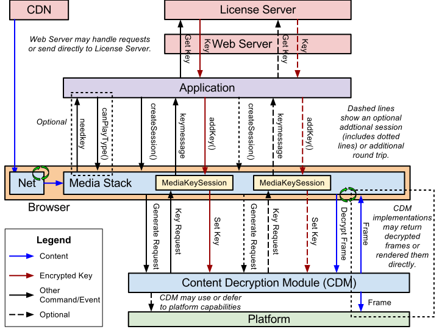

This proposal extends [[HTML]] providing APIs to control playback of encrypted content.
The API supports use cases ranging from simple clear key decryption to high value video (given an appropriate user agent implementation). License/key exchange is controlled by the application, facilitating the development of robust playback applications supporting a range of content decryption and protection technologies.
This specification does not define a content protection or Digital Rights Management system. Rather, it defines a common API that may be used to discover, select and interact with such systems as well as with simpler content encryption systems. Implementation of Digital Rights Management is not required for compliance with this specification: only the Clear Key system is required to be implemented as a common baseline.
The common API supports a simple set of content encryption capabilities, leaving application functions such as authentication and authorization to page authors. This is achieved by requiring content protection system-specific messaging to be mediated by the page rather than assuming out-of-band communication between the encryption system and a license or other server.
This specification enables script to select content protection mechanisms, control license/key exchange, and execute custom license management algorithms. It supports a wide range of use cases without requiring client-side modifications in each user agent for each use case. This enables content providers to develop a single application solution for all devices.
Supported content is encrypted per container-specific "common encryption" specifications, enabling use across key systems. Supported content has an unencrypted container, enabling metadata to be provided to the application and maintaining compatibility with other features.
Implementers should pay attention to the mitigations for the security and privacy threats and concerns described in this specification. In particular, the specification requirements for security and privacy cannot be met without knowledge of the security and privacy properties of the and its implementation(s). contains security and privacy provisions related to the integration and use of underlying implementations. focuses on external threats, such as input data or network attacks. focuses on the handling of user-specific information and providing users with adequate control over their own privacy.
While this specification is independent of the source of the media data, authors should be aware that many implementations only support decrypting media data provided via Media Source Extensions [[MEDIA-SOURCE]].
A generic stack implemented using the API is shown below. This diagram shows an example flow; other combinations of API calls and events are possible.
Content Decryption Module (CDM) is the client component that provides the functionality, including decryption, for one or more .
Implementations may or may not separate the implementations of CDMs or treat them as separate from the user agent. This is transparent to the API and application.
A Key System is a generic term for a decryption mechanism and/or content protection provider. Key System strings provide unique identification of a Key System. They are used by the user agent to select a and identify the source of a key-related event. User agents MUST support the Common Key Systems. User agents MAY also provide additional CDMs with corresponding Key System strings.
A Key System string is always a reverse domain name. Key System strings are compared using case-sensitive matching. It is RECOMMENDED that CDMs use simple lower-case ASCII key system strings.
For example, "com.example.somesystem".
Within a given system ("somesystem" in the example), subsystems may be defined as determined by the key system provider. For example, "com.example.somesystem.1" and "com.example.somesystem.1_5". Key System providers should keep in mind that these will be used for comparison and discovery, so they should be easy to compare and the structure should remain reasonably simple.
A Key Session, or simply Session, provides a context for message exchange with the as a result of which key(s) are made available to the CDM. Sessions are embodied as MediaKeySession objects. Each Key session is associated with a single instance of provided in the call.
Each Key Session is associated with a single MediaKeys object, and only media element(s) associated with that MediaKeys object may access key(s) associated with the session. Other MediaKeys objects, CDM instances, and media elements MUST NOT access the key session or use its key(s). Key sessions and the keys they contain are no longer once the session has been closed, including when the MediaKeySession object is destroyed.
All license(s) and key(s) associated with a Key Session which have not been explicitly stored MUST be destroyed when the Key Session is closed.
Key IDs MUST be unique within a session.
A Session ID is a unique string identifier generated by the that can be used by the application to identify MediaKeySession objects.
A new Session ID is generated each time the user agent and CDM successfully create a new session.
Each Session ID SHALL be unique within the browsing context in which it was created.
For session types for which the algorithm returns true, Session IDs MUST be unique within the over time, including across browsing sessions.
The underlying content protection protocol does not necessarily need to support Session IDs.
Unless otherwise stated, key refers to a decryption key that can be used to decrypt blocks within . Each such key is uniquely identified by a . A key is associated with the session used to provide it to the . (The same key may be present in multiple sessions.) Such keys MUST only be provided to the CDM via an call. (They may later be loaded by as part of the stored session data.)
Authors SHOULD encrypt each set of stream(s) that requires enforcement of a meaningfully different policy with a distinct key (and key ID). For example, if policies may differ between two video resolutions, stream(s) containing one resolution should not be encrypted with the key used to encrypt stream(s) containing the other resolution. When encrypted, audio streams SHOULD NOT use the same key as any video stream. This is the only way to ensure enforcement and compatibility across clients.
A key is considered usable for decryption if the CDM is certain the key is currently usable to decrypt one or more blocks of .
For example, a key is not usable for decryption if its license has expired. Even if its license has not expired, a key is not usable for decryption if other conditions (e.g., output protection) for its use are not currently satisfied.
A key is associated with a key ID that is a sequence of octets and which uniquely identifies the key. The container specifies the ID of the key that can decrypt a block or set of blocks within the . MAY contain key ID(s) to identify the keys that are needed to decrypt the media data. However, there is no requirement that Initialization Data contain any or all key IDs used in the or . Licenses provided to the associate each key with a key ID so the CDM can select the appropriate key when decrypting an encrypted block of media data.
A key is considered to be known to a session if the 's implementation of the session contains any information - specifically the - about it, regardless of whether the actual key is usable or its value is known. Known keys are exposed via the attribute.
Keys are considered known even after they become unusable, such as due to expiration or if they are removed but a is available. Keys only become unknown when they are explicitly removed from a session and any license release message is acknowledged.
For example, a key could become unknown if an call provides a new license that does not include the key and includes instructions to replace the license(s) that previously contained the key.
A license is key system-specific state information that includes one or more key(s) - each associated with a - and potentially other information about key usage.
usually require a block of initialization data containing information about the stream to be decrypted before they can construct a license request message. This block could be a simple key or content ID or a more complex structure containing such information. It SHOULD always allow unique identification of the key(s) needed to decrypt the content. This initialization information MAY be obtained in some application-specific way or provided with the .
Initialization Data is a generic term for container-specific data that is used by a to generate a license request.
The format of the initialization data depends upon the type of container, and containers MAY support more than one format of initialization data. The Initialization Data Type is a string that indicates the format of the accompanying Initialization Data. Initialization Data Type strings are always matched case-sensitively. It is RECOMMENDED that Initialization Data Type strings are lower-case ASCII strings.
The Encrypted Media Extensions Stream Format and Initialization Data Format Registry [[EME-INITDATA-REGISTRY]] provides the mapping from string to the specification for each format.
When the user agent encounters Initialization Data in the , it provides that Initialization Data to the application in the attribute of the event. The user agent MUST NOT store the Initialization Data or use its content at the time it is encountered. The application provides Initialization Data to the CDM via . The user agent MUST NOT provide Initialization Data to the CDM by other means.
Initialization Data MUST be a fixed value for a given set of stream(s) or . It MUST only contain information related to the keys required to play a given set of stream(s) or . It MUST NOT contain application data, client-specific data, user-specific data, or executable code.
Initialization Data SHOULD NOT contain Key System-specific data or values. Implementations MUST support the common formats defined in [[EME-INITDATA-REGISTRY]] for each they support.
Use of proprietary formats/contents is discouraged, and supporting or using only proprietary formats is strongly discouraged. Proprietary formats should only be used with pre-existing content or on pre-existing client devices that do not support the common formats.
Two or more identifiers or other values are said to be associable if they are identical or it is possible - with a reasonable amount of time and effort - to correlate or associate them. Otherwise, the values are non-associable.
For example, values created in the following ways are :
Using a trivially-reversible hash function.
Sharing a prefix or other subset
Replacing random value N with N+10
XORing the origin with a fixed value (because it is trivially reversible)
In contrast, two values that are completely unrelated or cryptographically distinct, such as via a cryptographically strong non-reversible hash function, are .
Two or more identifiers or other values are said to be associable by an entity if it is possible - with a reasonable amount of time and effort - for the referenced entity or set of entities to correlate or associate them without participation of additional entity(ies). Otherwise, the values are non-associable by an entity.
Two or more identifiers or other values are said to be non-associable by the application if they are non-associable by an entity where the entity is set that includes the application, all other applications, and other entities such as servers that they use or with which they communicate. Otherwise, the values would be considered associable by the application, which is forbidden.
A Distinctive Value is a value, piece of data, implication of the possession of a piece of data, or an observable behavior or timing that is not shared across a large population of users or client devices. A Distinctive Value may be in memory or persisted.
Examples of Distinctive Values include but are not limited to:
Other identifiers
Other session data
While a Distinctive Value is typically unique to a user or client device, a value does not need to be strictly unique to be distinctive. For example, a value shared among a small number of users could still be distinctive.
A Permanent Identifier is a value, piece of data, implication of the possession of a piece of data, or an observable behavior or timing that is indelible in some way or otherwise non-trivial for the user to remove, reset, or change. This, includes but is not limited to:
A hardware or hardware-based identifier
A value provisioned in the hardware device in the factory
A value associated with or derived from the operating system installation instance
A value associated with or derived from the user agent installation instance
A value associated with or derived from the or other software component
A value in a configuration file or similar semi-permanent data, even if generated on the client
Client or other user account values
A Distinctive Permanent Identifier is a Permanent Identifier that is distinctive.
When exposed outside the client, Distinctive Permanent Identifiers and values derived from or otherwise related to them MUST be encrypted. Distinctive Permanent Identifiers MUST NOT ever be exposed to the application, even in encrypted form.
While a Distinctive Permanent Identifier is typically unique to a user or client device, a Distinctive Permanent Identifier does not need to be strictly unique to be distinctive. For example, a Distinctive Permanent Identifier shared among a small number of users could still be distinctive.
A Distinctive Permanent Identifier is not a because it is not derived or generated (within the scope of this specification).
controls whether Distinctive Permanent Identifiers may be used. Specifically, Distinctive Permanent Identifiers may only be used when the value of the member of the MediaKeySystemAccess used to create the MediaKeys object is .
A Distinctive Identifier is a value, including in opaque or encrypted form, for which it is possible for any entity external to the client to correlate or associate values beyond what a user may expect on the web platform (e.g., cookies and other site data). For example, values that are associable by an entity other than the application across a) origins, b) browsing profiles, or c) browsing sessions even after the user has attempted to protect his or her privacy by clearing browsing data or values for which it is not easy for a user to break such association. In particular, a value is a Distinctive Identifier if it is possible for a central server, such as an individualization server, to associate values across origins, such as because the individualization requests contained a common value, or because values provided in individualization requests are associable by such server even after attempts to clear browsing data. Possible causes of this include use of in the individualization process.
Distinctive Identifiers exposed to the application, even in encrypted form, MUST adhere to the identifier requirements, including being encrypted, unique per origin and profile, and clearable.
While the instantiation or use of a Distinctive Identifier is triggered by the application's use of the APIs defined in this specification, the identifier need not be provided to the application to trigger conditions related to Distinctive Identifiers. (The MUST NOT ever be provided to the application, even in opaque or encrypted form.)
controls whether Distinctive Identifiers may be used. Specifically, Distinctive Identifiers may only be used when the value of the member of the MediaKeySystemAccess used to create the MediaKeys object is .
A Distinctive Identifier is a value, piece of data, implication of the possession of a piece of data, or an observable behavior or timing for which all of the following criteria hold:
It is distinctive.
While a Distinctive Identifier is typically unique to a user or client device, an identifier does not need to be strictly unique to be distinctive. For example, an identifier shared among a small number of users could still be distinctive.
It, information about it, or values derived from or otherwise related to it are exposed, even in encrypted form, outside the client. This includes but is not limited to providing it to the application and/or license, individualization, or other server.
It has one or more the following properties:
The generation, individualization, provisioning or other process that produced the value involved, used, provided, derived from, or similarly involved one or more or another Distinctive Identifier.
It is clearable but not along with cookies and other site data.
For example, via some mechanism external to the user agent, such as an OS-level mechanism.
Other properties of concern that are normatively prohibited for values exposed to the application include:
It is not clearable.
Value(s) created after clearing identifier(s) may be associable by the application with previous value(s).
Values may not be unique per origin and profile.
Values for different origins may be associable by the application.
Examples of such normatively prohibited values include but is not limited to:
A single hardware-based value used for all origins.
A single random based value used for all origins.
A single value obtained from an individualization process that is used for all origins.
Values that include all or part of any of the above values.
A single value that is used for multiple but not all origins.
A single value that is used for all origins on a domain. (Identifiers must be per-.)
A pre-provisioned origin-specific value.
Values generated by trivially-reversible means, which are thus associable by the application, regardless of whether generated on the client or involving an a individualization process. For example, XORing or otherwise integrating (part of) the origin with a fixed value.
While Distinctive Identifier are usually associable by the entity that generated them they MUST be . In other words, such correlation or association is only possible by the entity, such as an individualization server, that originally generated the Distinctive Identifier values. Entities with access to the MUST NOT expose this capability to applications, as this would make resulting Distinctive Identifiers associable by the application, and SHOULD take care to avoid exposing such correlation to other entities or third parties.
Examples of Distinctive Identifiers include but are not limited to:
A series of bytes that is included in key requests, different from the series of bytes included by other client devices, and based on or was acquired directly or indirectly using a .
A public key included in key requests that is different from the public keys included in the requests by other client devices and is based on or was acquired directly or indirectly using a .
Demonstration of possession of a private key (e.g., by signing some data) that other client devices do not have and is based on or was acquired directly or indirectly using a .
An identifier for such a key.
Such a value used to derive another value that is exposed even though the first value is not directly exposed.
A value derived from another Distinctive Identifier.
A random value that was reported to a (e.g., individualization) server along with a or provided by such a server after providing a .
A value derived from a unique value provisioned in the hardware device in the factory.
A value derived from a unique hardware value (e.g., MAC address or serial number) or software value (e.g., operating system installation instance or operating system user account name) in the hardware device in the factory.
A value derived from a unique value embedded in the CDM binary or other file used by the CDM.
Examples of things that are not Distinctive Identifiers:
A public key shared among all copies of a given CDM version if the installed base is large.
A nonce or ephemeral key that is unique but used in only one session.
A value that is not exposed, even in derived or similar ways, outside the client, including via individualization or similar.
Device-unique keys used in attestations between, for example, the video pipeline and the CDM when the CDM does not let these attestations further flow to the application and instead makes a new attestation on its own using a key that does not constitute a Distinctive Identifier.
A value that is fully cleared/clearable along with browsing data, such as cookies, after which it will be replaced by a value that is (not just ), even by a central server such as an individualization server, AND one or more of the following:
An implementation, configuration, instance, or object uses Distinctive Identifier(s) if, at any time during its lifetime or the lifetime of related such entities, it exposes, even in encrypted form, one or more , information about them, or values derived from or otherwise related to them outside the client. This includes but is not limited to providing such a value to the application and/or license, individualization, or other server.
An implementation, configuration, instance, or object uses Distinctive Permanent Identifier(s) if, at any time during its lifetime or the lifetime of related such entities, it exposes, even in encrypted form, one or more , information about them, or values derived from or otherwise related to them outside the client. This includes but is not limited to providing such a value to an individualization server. Such values MUST NOT be provided to the application.
An implementation, configuration, instance, or object uses Distinctive Identifier(s) or Distinctive Permanent Identifier(s) if it uses Distinctive Identifier(s) and/or uses Distinctive Permanent Identifier(s).
controls whether and may be used. Specifically, such identifiers may only be used when the value of the member of the MediaKeySystemAccess used to create the MediaKeys object is .
During playback, embedded media data is exposed to script in the embedding . In order for the API to provide in the event, MUST be with the embedding page. If is cross-origin with the embedding document, authors SHOULD use the attribute on the and CORS headers on the response to make it .
During playback, embedded media data is exposed to script in the embedding . In order for the API to provide in the event, MUST NOT be Mixed Content [[MIXED-CONTENT]].
Time MUST be equivalent to that represented in ECMAScript Time Values and Time Range [[ECMA-262]].
Time will equal NaN if no such time exists or if the time is indeterminate. It should never have the value Infinity.
Time generally represents an instant in time with millisecond accuracy; however, that alone is not a sufficient definition. The defined Time Values and Time Range reference adds other important requirements.
The time after which key(s) will no longer be .
A User Agent on a given machine may support execution in a variety of different contexts or modes or temporary states that are expected to behave independently with respect to application-visible state and data. In particular, all stored data is expected to be independent. In this specification we refer to such independent contexts or modes as "Browsing Profiles".
Examples of such independent contexts include if the user agent is running in different operating system user accounts or if the user agent provides the capability to define multiple independent profiles for a single account.
A valid media MIME type is a media MIME type that is also a [[HTML]]. When a MIME type includes parameters, such as `"codecs"` [[RFC6381]], such parameters MUST also be valid per the relevant specification.
When used with the features defined in this specification, MIME type strings SHOULD explicitly specify codecs and codec constraints (e.g., per [[RFC6381]]) unless these are normatively implied by the container.
This section defines the mechanism for obtaining access to a key system. The inclusion of capabilities in the request also enables feature detection.
The steps of an algorithm are always aborted when rejecting a promise.
is a policy-controlled feature
identified by the string encrypted-media. Its default allowlist is 'self'
[[!PERMISSIONS-POLICY]].
requestMediaKeySystemAccess()[Exposed=Window]
partial interface Navigator {
[SecureContext] Promise<MediaKeySystemAccess> requestMediaKeySystemAccess (DOMString keySystem, sequence<MediaKeySystemConfiguration> supportedConfigurations);
};requestMediaKeySystemAccessCalling this method may have user-visible effects, including requests for user consent. This method should only be called when the author intends to create and use a MediaKeys object with the provided configuration.
Requests access to the specified .
When supportedConfigurations is specified, the configuration specified by at least one of its elements must be supported.
The resulting MediaKeySystemAccess will correspond to the first such element.
Any permission checks or user interaction, such as a prompt for consent, MUST be performed before resolving the promise.
If the keySystem is not supported or not allowed (in at least one of the supportedConfigurations, if specified), the promise is rejected.
Otherwise, it is resolved with a new MediaKeySystemAccess object.
This method is only exposed to secure contexts [[SECURE-CONTEXTS]] as indicated by the [SecureContext] IDL attribute.
Requiring Secure Contexts is not a replacement for other security- and privacy-related requirements and recommendations. Implementations MUST meet all related requirements and SHOULD follow related recommendations such that the risks on in an secure context would be similar.
If the responsible
document is not allowed to use the encrypted-media feature, then throw a "SecurityError" DOMException and abort these steps.
If keySystem is the empty string, return a promise rejected with a newly created .
If supportedConfigurations is empty, return a promise rejected with a newly created .
Let promise be a new promise.
Run the following steps in parallel:
If keySystem is not one of the supported by the user agent, reject promise with a . String comparison is case-sensitive.
Let implementation be the implementation of keySystem.
For each value in supportedConfigurations:
Let candidate configuration be the value.
Let supported configuration be the result of executing the algorithm on implementation, candidate configuration, and origin.
If supported configuration is not NotSupported, run the following steps:
Let access be a new MediaKeySystemAccess object, and initialize it as follows:
Resolve promise with access and abort the parallel steps of this algorithm.
keySystem was not supported/allowed or none of the configurations in supportedConfigurations were supported/allowed.
Return promise.
| Parameter | Type | Nullable | Optional | Description |
|---|---|---|---|---|
| keySystem | DOMString | ✘ | ✘ | The for which access is being requested. |
| supportedConfigurations | sequence<MediaKeySystemConfiguration> | ✘ | ✘ | A sequence of MediaKeySystemConfiguration configurations to try in order. The first element with a satisfiable configuration will be used. |
Promise<MediaKeySystemAccess>Given a implementation implementation, MediaKeySystemConfiguration candidate configuration, and origin, this algorithm returns a supported configuration or NotSupported as appropriate.
Unrecognized dictionary members in candidate configuration are ignored per [[WEBIDL]] and will never reach this algorithm. Thus, they cannot be considered as part of the configuration.
For certain configurations, it may be required to obtain user consent or inform the user. User Agents have some flexibility to determine whether consent is required for a specific configuration and whether such consent may also apply to other configurations. For example, consent to one configuration may also imply consent for less powerful, more restricted configurations. Equally, a denial of consent for one configuration may imply denial of consent for more powerful, less restricted configurations.
Supported configurations, including supported audio and video codecs, may depend on availability of optional capabilities such as and persistent state. The following algorithm iteratively tries to find a configuration that is both supported and has user consent (or does not need consent).
User Agents should reuse earlier consent responses, when appropriate, at least for the duration of the algorithm in order to avoid repeated requests to the user for similar configurations.
The variable restrictions in the steps below represents the configurations for which consent has been denied during the execution of this algorithm or based on persisted consent information for the origin. It is used to determine whether user consent for a candidate configuration or accumulated configuration has been denied. Consent is denied for a accumulated configuration if every derived configuration has already been denied. Internal representation of restrictions is implementation-specific.
Let supported configuration be ConsentDenied.
Initialize restrictions to indicate that no configurations have had user consent denied.
Repeat the following step while supported configuration is ConsentDenied:
Return supported configuration.
Given a implementation implementation, MediaKeySystemConfiguration candidate configuration,
restrictions and origin, this algorithm returns a supported configuration, NotSupported, or ConsentDenied as appropriate and, in the ConsentDenied case, restrictions.
Let accumulated configuration be a new MediaKeySystemConfiguration dictionary.
Set the member of accumulated configuration to equal the member of candidate configuration.
If the member of candidate configuration is non-empty, run the following steps:
Let supported types be an empty sequence of DOMStrings.
For each value in candidate configuration's member:
Let initDataType be the value.
If the implementation supports generating requests based on initDataType, add initDataType to supported types. String comparison is case-sensitive. The empty string is never supported.
The initDataType MUST be supported independent of content types in order to avoid unexpectedly rejecting the configuration in later steps. Support for initDataType includes both license generation and, when appropriate, extraction from media data. See Initialization Data Type Support requirements.
If supported types is empty, return NotSupported.
Set the member of accumulated configuration to supported types.
Let distinctive identifier requirement be the value of candidate configuration's member.
If distinctive identifier requirement is and are not allowed according to restrictions, set distinctive identifier requirement to .
Follow the steps for distinctive identifier requirement from the following list:
If the implementation does not support use of Distinctive Identifier(s) in combination with accumulated configuration and restrictions, return NotSupported.
Continue with the following steps.
If the implementation requires use Distinctive Identifier(s) or Distinctive Permanent Identifier(s) in combination with accumulated configuration and restrictions, return NotSupported.
The combination of accumulated configuration and restrictions means all the possible configurations that include everything in accumulated configuration and that are not denied according to restrictions.
A feature is supported by an implementation with this combination if the implementation supports at least one of the configurations in the combination with the feature.
A feature is required by an implementtion with this combination if all configurations in the combination that are suported by the implementation include the feature.
Set the member of accumulated configuration to equal distinctive identifier requirement.
Let persistent state requirement be equal to the value of candidate configuration's member.
If persistent state requirement is and persisting state is not allowed according to restrictions, set persistent state requirement to .
Follow the steps for persistent state requirement from the following list:
If the implementation does not support persisting state in combination with accumulated configuration and restrictions, return NotSupported.
Continue with the following steps.
If the implementation requires persisting state in combination with accumulated configuration and restrictions, return NotSupported.
Set the member of accumulated configuration to equal the value of persistent state requirement.
Follow the steps for the first matching condition from the following list:
For each value in session types:
Let session type be the value.
If accumulated configuration's value is and the algorithm returns true for session type return NotSupported.
If the implementation does not support session type in combination with accumulated configuration and restrictions for other reasons, return NotSupported.
If accumulated configuration's value is and the result of running the algorithm on session type is true, change accumulated configuration's value to .
Set the member of accumulated configuration to session types.
If the and members in candidate configuration
are both empty, return NotSupported.
If accumulated configuration's value is , follow the steps for the first matching condition from the following list:
If accumulated configuration's value is , follow the steps for the first matching condition from the following list:
If implementation in the configuration specified by the combination of the values in accumulated configuration is not supported or not allowed in the origin, return NotSupported.
In this step, "supported" includes the implementation being available for use when this algorithm returns, not just user agent support for such an implementation.
If accumulated configuration's value is and the associated with accumulated configuration are not unique per origin and profile and clearable:
Update restrictions to reflect that all configurations described by accumulated configuration do not have user consent.
Return ConsentDenied and restrictions.
The "unique per origin and profile" and "clearable" conditions cannot be false in a compliant implementation because implementations MUST use per-origin per-profile identifiers and allow the user to clear identifier.
Let consent status and updated restrictions be the result of running the algorithm on accumulated configuration, restrictions and origin and follow the steps for the value of consent status from the following list:
ConsentDenied:
Return ConsentDenied and updated restrictions.
InformUser:Inform the user that accumulated configuration is in use in the origin including, specifically, the information that and/or as appropriate will be used if the member of accumulated configuration is . Continue to the next step.
Allowed:Continue to the next step.
Return accumulated configuration.
Given an audio/video type, MediaKeySystemMediaCapability sequence requested media capabilities, MediaKeySystemConfiguration accumulated configuration, and restrictions, this algorithm returns a sequence of supported MediaKeySystemMediaCapability values for this audio/video type or null as appropriate.
Let local accumulated configuration be a local copy of accumulated configuration.
Let supported media capabilities be an empty sequence of MediaKeySystemMediaCapability dictionaries.
For each requested media capability in requested media capabilities:
Let encryption scheme be requested media capability’s member.
If content type is the empty string, return null.
If content type is not a or is unrecognized, continue to the next iteration.
Let container be the container type specified by content type.
If the user agent does not support container, continue to the next iteration. The case-sensitivity of string comparisons is determined by the appropriate RFC.
Per RFC 6838 [[RFC6838]], "Both top-level type and subtype names are case-insensitive."
Let parameters be the RFC 6381 [[RFC6381]] parameters, if any, specified by content type.
If the user agent does not recognize one or more parameters, continue to the next iteration.
Let media types be the set of codecs and codec constraints specified by parameters. The case-sensitivity of string comparisons is determined by the appropriate RFC or other specification.
Case-sensitive string comparison is RECOMMENDED because RFC 6381 [[RFC6381]] says, "Values are case sensitive" for some formats.
If media types is empty:
Let parameters be that set.
Continue to the next iteration.
If content type is not strictly a audio/video type, continue to the next iteration.
For example, if audio/video type is Video and the top-level type is not "video" or media types contains non-video codecs.
If encryption scheme is non-null and is not recognized or not supported by implementation, continue to the next iteration.
If robustness is not the empty string and contains an unrecognized value or a value not supported by implementation, continue to the next iteration. String comparison is case-sensitive.
If the user agent and implementation definitely support playback of encrypted for the combination of container, media types, encryption scheme, robustness and local accumulated configuration in combination with restrictions:
requested media capability (content type and robustness) must be supported when used together with all previously added requested media capabilities.
Add requested media capability to supported media capabilities.
This step ensures that the values of the members of entries in supported media capabilities are exactly the strings supplied in requested media capability without modification by the User Agent.
Add requested media capability to the member of local accumulated configuration.
Add requested media capability to the member of local accumulated configuration.
This step ensures that configurations are always checked with configurations from previous iterations, including from previous calls to this algorithm. Otherwise, only configurations from previous calls to this algorithm would be checked in subsequent calls.
If supported media capabilities is empty, return null.
None of the MediaKeySystemMediaCapability elements in requested media capabilities is supported in combination with accumulated configuration.
Return supported media capabilities.
Given an accumulated configuration, restrictions and origin, this algorithm returns the consent status for
accumulated configuration and origin as one of ConsentDenied, InformUser or Allowed,
together with an updated value for restrictions in the ConsentDenied case.
Consent status for accumulated configuration depends at least on the value of the member of accumulated configuration.
Previous consent for accumulated configuration with set to does not imply consent for the same configuration with set to or .
If there is persisted denial for origin indicating that accumulated configuration is not allowed, run the following steps:
Update restrictions to reflect the configurations for which consent has been denied.
Return ConsentDenied and restrictions.
If there is persisted consent for origin indicating accumulated configuration is allowed, return Allowed.
If any of the following are true:
The member of accumulated configuration is not and the combination of the User Agent, implementation and accumulated configuration does not follow all the recommendations of Allow Persistent Data to Be Cleared with respect to .
The user agent requires explicit user consent for the accumulated configuration for other reasons.
Another reason for requiring explicit user consent may be due to the security properties of the CDM implementation.
then run the following steps:
Request user consent to use accumulated configuration in the origin and wait for the user response.
The consent MUST include consent to use a and/or as appropriate if accumulated configuration's member is .
User consent to use accumulated configuration is specific to the origin and may be limited to configurations sharing certain properties with accumulated configuration.
If consent was denied, run the following steps:
Update restrictions to reflect the configurations for which consent was denied.
Return ConsentDenied and restrictions.
If the member of accumulated configuration is not
, return InformUser.
If the user agent requires informing the user for the accumulated configuration for other reasons, return InformUser.
Return Allowed.
enum MediaKeysRequirement {
"required",
"optional",
"not-allowed"
};
The MediaKeysRequirement enumeration is defined as follows:
| Enumeration description | |
|---|---|
required |
|
optional |
|
not-allowed |
|
dictionary MediaKeySystemConfiguration {
DOMString label = "";
sequence<DOMString> initDataTypes = [];
sequence<MediaKeySystemMediaCapability> audioCapabilities = [];
sequence<MediaKeySystemMediaCapability> videoCapabilities = [];
MediaKeysRequirement distinctiveIdentifier = "optional";
MediaKeysRequirement persistentState = "optional";
sequence<DOMString> sessionTypes;
};
The dictionary MediaKeySystemConfiguration contains the following members:
label of type {{DOMString}}, defaulting to ""initDataTypes of type sequence<{{DOMString}}>, defaulting to []audioCapabilities of type sequence<MediaKeySystemMediaCapability>, defaulting to []videoCapabilities of type sequence<MediaKeySystemMediaCapability>, defaulting to []distinctiveIdentifier of type MediaKeysRequirement, defaulting to "optional"When this member is , the implementation MUST NOT use Distinctive Identifier(s) or Distinctive Permanent Identifier(s) for any operations associated with any object created from this configuration.
persistentState of type MediaKeysRequirement, defaulting to "optional"The CDM MUST NOT persist any state related to the application or of this object's when this member is .
For the purposes of this member, persistent state does not include persistent unique identifiers () controlled by the implementation. independently reflects this requirement.
Only sessions may be created when persistent state is not supported.
For sessions, the need and ability to store state is implementation-specific and may vary by feature used.
Applications intending to create non- sessions, should set this member to when calling .
sessionTypes of type sequence<{{DOMString}}>If this member is [[WEBIDL]] when the dictionary is passed to , the dictionary will be treated as if this member is set to [ ].
Implementations SHOULD NOT add members to this dictionary. Should member(s) be added, they MUST be of type MediaKeysRequirement, and it is RECOMMENDED that they have default values of to support the widest range of application and client combinations.
Dictionary members not recognized by a user agent implementation are ignored per [[WEBIDL]] and will not be considered in the algorithm. Should an application use non-standard dictionary member(s), it MUST NOT rely on user agent implementations rejecting a configuration that includes such dictionary members.
This dictionary MUST NOT be used to pass state or data to the CDM.
dictionary MediaKeySystemMediaCapability {
DOMString contentType = "";
DOMString? encryptionScheme = null;
DOMString robustness = "";
};
contentType of type {{DOMString}}, defaulting to ""The type of the . Its value must be a . The empty string is invalid.
encryptionScheme of type {{DOMString}}, defaulting to nullThe encryption scheme associated with the content type. A value which is null or not present indicates to the user agent that no specific encryption scheme is required by the application, and therefore any encryption scheme is acceptable.
Applications that are aware of this field SHOULD specify the encryption schemes they require, since different encryption schemes are generally incompatible with one another. It is unrealistic for an application to be accepting of "any" encryption scheme, but the default of null and the interpretation of null as "any" provide backward compatibility for unaware applications and a path to a polyfill for older user agents.
The empty string is distinct from null or not present, and so would be treated as an unrecognized encryption scheme.
Well-known values for encryptionScheme are:
cenc:
The "cenc" mode, defined in [[CENC]], section 4.2a. AES-CTR
mode full sample and video NAL subsample encryption.
cbcs:
The "cbcs" mode, defined in [[CENC]], section 4.2d. AES-CBC
mode partial video NAL pattern encryption. For video, the
spec allows various encryption patterns.
cbcs-1-9:
The same as mode, but with a
specific encrypt:skip pattern of 1:9 for video, as
recommended in [[CENC]], section 10.4.2.
robustness of type {{DOMString}}, defaulting to ""The robustness level associated with the content type. The empty string indicates that any ability to decrypt and decode the content type is acceptable.
Implementations MUST configure the CDM to support at least the robustness levels specified in the configuration of the MediaKeySystemAccess object used to create the MediaKeys object. Exact configuration of the CDM is implementation-specific, and implementations MAY configure the CDM to use the highest robustness level in the configuration even if a higher robustness level is available. If only the empty string is specified, implementations MAY be configured to use the lowest robustness level the implementation supports.
Applications SHOULD specify the robustness level(s) they require to avoid unexpected client incompatibilities.
In order for the capability represented by this object to be considered supported, MUST NOT be the empty string and its entire value, including all codecs, MUST be supported with .
If any of a set of codecs is acceptable, use a separate instances of this dictionary for each codec.
The MediaKeySystemAccess object provides access to a .
[Exposed=Window, SecureContext] interface MediaKeySystemAccess {
readonly attribute DOMString keySystem;
MediaKeySystemConfiguration getConfiguration ();
Promise<MediaKeys> createMediaKeys ();
};getConfigurationReturns the supported combination of configuration options selected by the algorithm.
The returned object is a non-strict subset (plus any implied defaults) of the first satisfiable MediaKeySystemConfiguration configuration passed to the call that returned the promise that was resolved with this object. It does not contain values capabilities not specified in that single configuration (other than implied defaults) and thus may not reflect all capabilities of the implementation. All values in the configuration may be used in any combination. Members of type MediaKeysRequirement reflect whether the capability is required for any combination. They will not have the value .
Return this object's configuration value.
This results in a new object being created and initialized from configuration each time this method is called.
If was not given by the application, the accumulated configuration MUST still contain a field with a value of null, so that polyfills can detect the user agent's support for the field without specifying specific values.
MediaKeySystemConfigurationcreateMediaKeysCreates a new MediaKeys object for keySystem.
Let promise be a new promise.
Run the following steps in parallel:
Let configuration be the value of this object's configuration value.
Let use distinctive identifier be true if the value of configuration's
member is and false otherwise.
Let persistent state allowed be true if the value of configuration's
member is and false otherwise.
Load and initialize the implementation represented by this object's cdm implementation value if necessary.
Let instance be a new instance of the implementation represented by this object's cdm implementation value.
Initialize instance to enable, disable and/or select features using configuration.
If use distinctive identifier is false, prevent instance from using Distinctive Identifier(s) and Distinctive Permanent Identifier(s).
If persistent state allowed is false, prevent instance from persisting any state related to the application or of this object's .
Let media keys be a new MediaKeys object, and initialize it as follows:
Let the use distinctive identifier value be use distinctive identifier.
Let the persistent state allowed value be persistent state allowed.
Let the supported session types value be be the value of configuration's member.
Let the cdm implementation value be this object's cdm implementation value.
Let the cdm instance value be instance.
Resolve promise with media keys.
Return promise.
Promise<MediaKeys>The MediaKeys object represents a set of keys that an associated HTMLMediaElement can use for decryption of during playback. It also represents a instance.
A MediaKeys object may be destroyed by the user agent when it is no longer accessible
For example, when there are no script references and no attached media element.
For methods that return a promise, all errors are reported asynchronously by rejecting the returned Promise. This includes [[WEBIDL]] type mapping errors.
The steps of an algorithm are always aborted when rejecting a promise.
enum MediaKeySessionType {
"temporary",
"persistent-license"
};
The MediaKeySessionType enumeration is defined as follows:
| Enumeration description | |
|---|---|
temporary |
A session for which the license, key(s) and record of or data related to the session are not persisted. The application need not worry about managing such storage. Support for this session type is REQUIRED. |
persistent-license |
A session for which the license (and potentially other data related to the session) will be persisted. A SHALL be persisted when the license and key(s) it contains are destroyed. The record of license destruction is a -specific attestation that the license and key(s) it contains are no longer usable by the client. Support for this session type is OPTIONAL. Sessions of this type can only be created if the configuration associated with the MediaKeySystemAccess object that created this object has a value of . The session MUST be loadable via its once is called successfully. A of type containing the will be generated when is called until the record is acknowledged by a response passed to . The application is responsible for ensuring that data persisted for such sessions is removed when the application no longer needs it. See . |
[Exposed=Window, SecureContext] interface MediaKeys {
MediaKeySession createSession (optional MediaKeySessionType sessionType = "temporary");
Promise<boolean> setServerCertificate (BufferSource serverCertificate);
};createSessionReturns a new MediaKeySession object.
If this object's supported session types value does not contain sessionType, [[WEBIDL]] a .
sessionType values for which the algorithm returns true will fail if this object's persistent state allowed value is false.
If the implementation does not support MediaKeySession operations in the current state, [[WEBIDL]] an .
Some implementations are unable to execute MediaKeySession algorithms until this MediaKeys object is associated with a media element using . This step enables applications to detect this uncommon behavior before attempting to perform such operations.
Let session be a new MediaKeySession object, and initialize it as follows:
Let key status be a new empty MediaKeyStatusMap object, and initialize it as follows:
Let the session type value be sessionType.
Let the uninitialized value be true.
Let the callable value be false.
Let the closing or closed value be false.
Let the use distinctive identifier value be this object's use distinctive identifier value.
Let the cdm implementation value be this object's cdm implementation.
Let the cdm instance value be this object's cdm instance.
Return session.
| Parameter | Type | Nullable | Optional | Description |
|---|---|---|---|---|
| sessionType | MediaKeySessionType = "temporary" | ✘ | ✔ | The type of session to create. The session type affects the behavior of the returned object. |
MediaKeySessionsetServerCertificateProvides a server certificate to be used to encrypt messages to the license server.
Key Systems that use such certificates MUST also support requesting the certificate from the server via the algorithm.
This method allows an application to proactively provide a server certificate to implementations that support it to avoid the additional round trip should the CDM request it. It is intended as an optimization, and applications are not required to use it.
If the implementation represented by this object's cdm implementation value does not support server certificates, return a promise resolved with false.
If serverCertificate is an empty array, return a promise rejected with a new a newly created .
Let certificate be a copy of the contents of the serverCertificate parameter.
Let promise be a new promise.
Run the following steps in parallel:
Let sanitized certificate be a validated and/or sanitized version of certificate.
The user agent should thoroughly validate the certificate before passing it to the CDM. This may include verifying values are within reasonable limits, stripping irrelevant data or fields, pre-parsing it, sanitizing it, and/or generating a fully sanitized version. The user agent should check that the length and values of fields are reasonable. Unknown fields should be rejected or removed.
Use this object's cdm instance to process sanitized certificate.
Resolve promise with true.
Return promise.
| Parameter | Type | Nullable | Optional | Description |
|---|---|---|---|---|
| serverCertificate | BufferSource | ✘ | ✘ | The server certificate. The contents are -specific. It MUST NOT contain executable code. |
Promise<boolean>The Is persistent session type? algorithm is run to determine whether the specified session type supports persistence of any kind. Requests to run this algorithm include a MediaKeySessionType value.
The following steps are run:
Let the session type be the specified MediaKeySessionType value.
Follow the steps for the value of session type from the following list:
This section describes general requirements related to storage and persistence.
If a MediaKeys object's persistent state allowed value is false then the object's cdm instance
SHALL NOT persist state or access previously persisted state as a result of operations on this object or any sessions that it creates.
If a MediaKeys object's persistent state allowed value is true then the object's cdm instance
MAY persist state or access previously persisted state as a result of operations on this object or any sessions that it creates.
Persisted data MUST always be stored such that only the of this object's can access it. In addition, the data MUST only be accessible by the current ; other browsing profiles, user agents, and applications MUST NOT be able to access the stored data. See Information Stored on User Devices.
See and for additional considerations when supporting persistent storage.
The MediaKeySession object represents a key session.
A MediaKeySession object is closed if and only if the object's attribute has been resolved.
The User Agent SHALL execute the algorithm continuously for each MediaKeySession object that is not . The algorithm MUST be run in parallel to the main event loop but not in parallel to other procedures defined in this specification that are also defined to be run in parallel.
A MediaKeySession object SHALL NOT be destroyed and SHALL continue to receive events if it is not and the MediaKeys object that created it remains accessible. Otherwise, a MediaKeySession object that is no longer accessible SHALL NOT receive further events and MAY be destroyed.
The above rule implies that the CDM instance must not be destroyed until all MediaKeys objects and all MediaKeySession objects associated with the CDM instance are destroyed.
If a MediaKeySession object is not when it becomes inaccessible to the page, the CDM SHALL close the key session associated with the object.
Closing the key session results in the destruction of any license(s) and key(s) that have not been explicitly stored.
Exactly when the key session is closed is an implementation detail, and applications SHOULD NOT rely on specific timing. Applications that want to ensure a session is closed before taking some other action SHOULD call and wait for the returned promise to be resolved.
For methods that return a promise, all errors are reported asynchronously by rejecting the returned Promise. This includes [[WEBIDL]] type mapping errors.
The following steps of an algorithm are always aborted when rejecting a promise.
enum MediaKeySessionClosedReason {
"internal-error",
"closed-by-application",
"release-acknowledged",
"hardware-context-reset",
"resource-evicted"
};
The MediaKeySessionClosedReason enumeration is defined as follows:
| Enumeration description | |
|---|---|
internal-error | The session was closed because of an unrecoverable error in the CDM. When this occurs, applications MUST NOT create new sessions on this MediaKeys instance. |
closed-by-application | The session was closed by the application calling the method of the session explicitly. |
release-acknowledged | The session was closed because the CDM received a acknowledgement. |
hardware-context-reset |
The session was closed because the CDM's original hardware context was reset.
When this occurs, the User Agent MUST allow the application to create new sessions on this MediaKeys instance.
This could occur for many reasons, including device hibernation, monitor configuration change, etc. The exact reasons for a hardware context reset are implementation-dependent. |
resource-evicted |
The session was closed because the system needed to reclaim resources to allow the creation of other sessions.
This would imply that the application is running into a device-specific limit on session resources. If the closed session is still needed for some reason, the application developer should consider some strategy to reduce the number of sessions needed or proactively close unneeded sessions. |
[Exposed=Window, SecureContext] interface MediaKeySession : EventTarget {
readonly attribute DOMString sessionId;
readonly attribute unrestricted double expiration;
readonly attribute Promise<MediaKeySessionClosedReason> closed;
readonly attribute MediaKeyStatusMap keyStatuses;
attribute EventHandler onkeystatuseschange;
attribute EventHandler onmessage;
Promise<undefined> generateRequest (DOMString initDataType, BufferSource initData);
Promise<boolean> load (DOMString sessionId);
Promise<undefined> update (BufferSource response);
Promise<undefined> close ();
Promise<undefined> remove ();
};
sessionId of type {{DOMString}}, readonly The for this object and the associated key(s) or license(s).
expiration of type {{unrestricted double}}, readonly The for all key(s) in the session, or NaN if no such time exists or if the license explicitly never expires, as determined by the CDM.
This value MAY change during the session lifetime, such as when an action triggers the start of a window.
closed of type Promise<{{MediaKeySessionClosedReason}}>, readonly Signals when the object becomes as a result of the algorithm being run. This promise can only be fulfilled and is never rejected.
keyStatuses of type MediaKeyStatusMap, readonly A reference to a read-only map of key IDs known to the session to the current status of the associated key. Each entry MUST have a unique key ID.
The map entries and their values may be updated whenever the event loop spins. The map MUST NOT ever be inconsistent or partially updated, but it may change between accesses if the event loop spins in between the accesses. Key IDs may be added as the result of a or call. Key IDs may be removed as the result of a call that removes knowledge of existing keys (or replaces the existing set of keys with a new set). Key IDs MUST NOT be removed because they became unusable, such as due to expiration. Instead, such keys MUST be given an appropriate status, such as .
Some older platforms may contain Key System implementations that do not expose key IDs, making it impossible to provide a compliant user agent implementation.
To maximize interoperability, user agent implementations exposing such CDMs SHOULD implement this member as follows:
Whenever a non-empty list is appropriate, such as when the key session represented by this object may contain key(s), populate the map with a single pair containing
the one-byte key ID 0 and the MediaKeyStatus most appropriate for the aggregated status of this object.
onkeystatuseschange of type {{EventHandler}}onmessage of type {{EventHandler}}generateRequestGenerates a license request based on the initData. A of type or will always be queued if the algorithm succeeds and the promise is resolved.
If this object's closing or closed value is true, return a promise rejected with an .
If this object's uninitialized value is false, return a promise rejected with an .
Let this object's uninitialized value be false.
If initDataType is the empty string, return a promise rejected with a newly created .
If initData is an empty array, return a promise rejected with a newly created .
If the implementation represented by this object's cdm implementation value does not support initDataType as an , return a promise rejected with a . String comparison is case-sensitive.
Let init data be a copy of the contents of the initData parameter.
Let session type be this object's session type.
Let promise be a new promise.
Run the following steps in parallel:
If the init data is not valid for initDataType, reject promise with a newly created .
Let sanitized init data be a validated and sanitized version of init data.
The user agent MUST thoroughly validate the before passing it to the CDM. This includes verifying that the length and values of fields are reasonable, verifying that values are within reasonable limits, and stripping irrelevant, unsupported, or unknown data or fields. It is RECOMMENDED that user agents pre-parse, sanitize, and/or generate a fully sanitized version of the . If the format specified by initDataType supports multiple entries, the user agent SHOULD remove entries that are not needed by the CDM. The user agent MUST NOT re-order entries within the .
If the preceding step failed, reject promise with a newly created .
Let session id be the empty string.
Let message be null.
Let message type be null.
Let cdm be the CDM instance represented by this object's cdm instance value.
Use the cdm to execute the following steps:
If the sanitized init data is not supported by the cdm, reject promise with a .
Follow the steps for the value of session type from the following list:
Let session id be a unique string.
If the result of running the algorithm on session type is true, the ID MUST be unique within the of this object's over time, including across Documents and browsing sessions.
Let message be a license request for the requested license type generated based on the sanitized init data interpreted per initDataType.
The cdm MUST NOT use any stream-specific data, including , not provided via the sanitized init data.
The cdm SHOULD NOT store session data, including the session ID, at this point. See .
Let message be the request that needs to be processed before a license request request for the requested license type can be generated based on the sanitized init data.
In a subsequent call to the CDM MUST generate a license request for the requested license type based on the sanitized init data, which is interpreted per initDataType.
If any of the preceding steps failed due to a lack of resources, reject promise with .
If any of the preceding steps failed for any other reason, reject promise with .
Set this object's callable value to true.
Run the algorithm on the session, providing message type and message.
Resolve promise.
Since promise handlers are queued as microtasks, these will be executed ahead of any events queued by the preceding steps.
Return promise.
| Parameter | Type | Nullable | Optional | Description |
|---|---|---|---|---|
| initDataType | DOMString | ✘ | ✘ | The of the initData. |
| initData | BufferSource | ✘ | ✘ |
Promise<undefined>loadLoads the data stored for the specified session into this object.
If this object's closing or closed value is true, return a promise rejected with an .
If this object's uninitialized value is false, return a promise rejected with an .
Let this object's uninitialized value be false.
If sessionId is the empty string, return a promise rejected with a newly created .
If the result of running the algorithm on this object's session type is false, return a promise rejected with a newly created .
Let promise be a new promise.
Run the following steps in parallel:
Let sanitized session ID be a validated and/or sanitized version of sessionId.
The user agent should thoroughly validate the sessionId value before passing it to the CDM. At a minimum, this should include checking that the length and value are reasonable (e.g., not longer than tens of characters and alphanumeric).
If the preceding step failed, or if sanitized session ID is empty, reject promise with a newly created .
If there is a MediaKeySession object that is not in this object's whose attribute is sanitized session ID, reject promise with a .
In other words, do not create a session if a non-closed session, regardless of type, already exists for this sanitized session ID in this browsing context.
Let expiration time be NaN.
Let message be null.
Let message type be null.
Let cdm be the CDM instance represented by this object's cdm instance value.
Use the cdm to execute the following steps:
If there is no data stored for the sanitized session ID in the origin, resolve promise with false and abort these steps.
If the stored session's session type is not the same as the current MediaKeySession session type, reject promise with a newly created .
Let session data be the data stored for the sanitized session ID in the origin. This MUST NOT include data from other origin(s) or that is not associated with an origin.
If there is a MediaKeySession object that is not in any and that represents the session data, reject promise with a .
In other words, do not create a session if a non-closed persistent session already exists for this sanitized session ID in any browsing context.
Load the session data.
If the session data indicates an for the session, let expiration time be that expiration time.
If a message needs to be sent, execute the following steps:
Let message be a message generated based on the session data.
Let message type be the appropriate MediaKeyMessageType for the message.
If any of the preceding steps failed, reject promise with a .
Set this object's callable value to true.
If the loaded session contains information about any keys (there are known keys), run the algorithm on the session, providing each key's along with the appropriate MediaKeyStatus.
Should additional processing be necessary to determine with certainty the status of a key, use . Once the additional processing for one or more keys has completed, run the algorithm again with the actual status(es).
Run the algorithm on the session, providing expiration time.
If message is not null, run the algorithm on the session, providing message type and message.
Resolve promise with true.
Since promise handlers are queued as microtasks, these will be executed ahead of any events queued by the preceding steps.
Return promise.
| Parameter | Type | Nullable | Optional | Description |
|---|---|---|---|---|
| sessionId | DOMString | ✘ | ✘ | The of the session to load. |
Promise<boolean>updateProvides messages, including licenses, to the CDM.
If this object's closing or closed value is true, return a promise rejected with an .
If this object's callable value is false, return a promise rejected with an .
If response is an empty array, return a promise rejected with a newly created .
Let response copy be a copy of the contents of the response parameter.
Let promise be a new promise.
Run the following steps in parallel:
Let sanitized response be a validated and/or sanitized version of response copy.
The user agent should thoroughly validate the response before passing it to the CDM. This may include verifying values are within reasonable limits, stripping irrelevant data or fields, pre-parsing it, sanitizing it, and/or generating a fully sanitized version. The user agent should check that the length and values of fields are reasonable. Unknown fields should be rejected or removed.
If the preceding step failed, or if sanitized response is empty, reject promise with a newly created .
Let message be null.
Let message type be null.
Let session closed be false.
Let cdm be the CDM instance represented by this object's cdm instance value.
Use the cdm to execute the following steps:
If the format of sanitized response is invalid in any way, reject promise with a newly created .
Process sanitized response, following the stipulation for the first matching condition from the following list:
This includes an initial license, an updated license, and a license renewal message.
Process sanitized response, following the stipulation for the first matching condition from the following list:
State information, including keys, for each session MUST be stored in such a way that closing one session does not affect the observable state in other session(s), even if they contain overlapping key IDs.
When sanitized response contains key(s) and/or related data, cdm will likely store (in memory) the key and related data indexed by key ID.
The replacement algorithm within a session is -dependent.
It is RECOMMENDED that CDM implementations support a standard and reasonably high minimum number of keys per MediaKeySession object, including a standard replacement algorithm, and a standard and reasonably high minimum number of MediaKeySession objects. This enables a reasonable number of key rotation algorithms to be implemented across user agents and may reduce the likelihood of playback interruptions in use cases that involve various streams in the same element (e.g., adaptive streams, various audio and video tracks) using different keys.
Run the following steps:
Close the key session and clear all stored session data associated with this object, including the and .
A subsequent call to with the value of this object's would fail because there is no data stored for that session ID.
Set session closed to true.
For example, sanitized response may contain information that will be used to generate another event. In this case, there is no need to verify the contents against the sessionType.
If a message needs to be sent, execute the following steps:
Let message be that message.
Let message type be the appropriate MediaKeyMessageType for the message.
Run the following steps:
If the set of keys known to the CDM for this object changed or the status of any key(s) changed, run the algorithm on the session, providing each known key's along with the appropriate MediaKeyStatus.
Should additional processing be necessary to determine with certainty the status of a key, use . Once the additional processing for one or more keys has completed, run the algorithm again with the actual status(es).
If the for the session changed, run the algorithm on the session, providing the new expiration time.
If message is not null, run the algorithm on the session, providing message type and message.
Resolve promise.
Since promise handlers are queued as microtasks, these will be executed ahead of any events queued by the preceding steps.
Return promise.
| Parameter | Type | Nullable | Optional | Description |
|---|---|---|---|---|
| response | BufferSource | ✘ | ✘ | A message to be provided to the CDM. The contents are -specific. It MUST NOT contain executable code. |
Promise<undefined>closeIndicates that the application no longer needs the session and the CDM should release any resources associated with the session and close it. Persisted data should not be released or cleared.
The returned promise is resolved when the request has been processed, and the attribute promise is resolved with when the session is closed.
If this object's closing or closed value is true, return a resolved promise.
If this object's callable value is false, return a promise rejected with an .
Let promise be a new promise.
Set this object's closing or closed value to true.
Run the following steps in parallel:
Let cdm be the CDM instance represented by this object's cdm instance value.
Use cdm to close the key session associated with this object.
Closing the key session results in the destruction of any license(s) and key(s) that have not been explicitly stored.
Return promise.
Promise<undefined>removeRemoves all license(s) and key(s) associated with the session. For persistent session types, other session data will be cleared as defined for each session type once a release message acknowledgment is processed by .
If this object's closing or closed value is true, return a promise rejected with an .
If this object's callable value is false, return a promise rejected with an .
Let promise be a new promise.
Run the following steps in parallel:
Let cdm be the CDM instance represented by this object's cdm instance value.
Let message be null.
Let message type be null.
Use the cdm to execute the following steps:
If any license(s) and/or key(s) are associated with the session:
Destroy the license(s) and/or key(s) associated with the session.
This implies destruction of the license(s) and/or keys(s) whether they are in memory, persistent store or both.
Follow the steps for the value of this object's session type from the following list:
Run the algorithm on the session, providing all key ID(s) in the session along with the MediaKeyStatus value for each.
If message is not null, run the algorithm on the session, providing message type and message.
Resolve promise.
Since promise handlers are queued as microtasks, these will be executed ahead of any events queued by the preceding steps.
Return promise.
Promise<undefined>The MediaKeyStatusMap object is a read-only map of key IDs to the current status of the associated key.
A key's status is independent of whether the key is currently being used and of media data.
For example, if a key has output requirements that cannot currently be met, the key's status should be or , as appropriate, regardless of whether that key has been or is currently needed to decrypt media data.
[Exposed=Window, SecureContext] interface MediaKeyStatusMap {
iterable<BufferSource,MediaKeyStatus>;
readonly attribute unsigned long size;
boolean has (BufferSource keyId);
(MediaKeyStatus or undefined) get (BufferSource keyId);
};
size of type {{unsigned long}}, readonly The number of known keys.
hasReturns true if the status of the key identified by keyId is known.
| Parameter | Type | Nullable | Optional | Description |
|---|---|---|---|---|
| keyId | BufferSource | ✘ | ✘ | The of the key. |
booleangetReturns the MediaKeyStatus of the key identified by keyId or undefined if the status of the key identified by keyId is not known.
| Parameter | Type | Nullable | Optional | Description |
|---|---|---|---|---|
| keyId | BufferSource | ✘ | ✘ | The of the key. |
any
This interface has entries, keys, values, forEach and @@iterator methods
brought by iterable (see WebIDL, 3.2.7 Iterable declarations).
The value pairs to iterate over are a snapshot of the set of pairs formed from the and associated MediaKeyStatus value for all known keys, sorted by . Key IDs are compared as follows: For key IDs A of length m and B of length n, assigned such that m <= n, let A < B if and only if the m octets of A are less in lexicographical order than the first m octets of B or those octets are equal and m < n.
enum MediaKeyStatus {
"usable",
"expired",
"released",
"output-restricted",
"output-downscaled",
"usable-in-future",
"status-pending",
"internal-error"
};
The MediaKeyStatus enumeration is defined as follows:
The MediaKeyMessageEvent object is used for the event.
Events are constructed as defined in [[DOM]].
enum MediaKeyMessageType {
"license-request",
"license-renewal",
"license-release",
"individualization-request"
};
The MediaKeyMessageType is defined as follows:
| Enumeration description | |
|---|---|
license-request | The message contains a request for a new license. |
license-renewal | The message contains a request to renew an existing license. |
license-release | The message contains a . |
individualization-request |
The message contains a request for App-Assisted Individualization (or re-individualization). As with all other messages, any identifiers in the message MUST be distinctive per origin and profile and MUST NOT be . |
[Exposed=Window, SecureContext]
interface MediaKeyMessageEvent : Event {
constructor(DOMString type, MediaKeyMessageEventInit eventInitDict);
readonly attribute MediaKeyMessageType messageType;
readonly attribute ArrayBuffer message;
};MediaKeyMessageEvent| Parameter | Type | Nullable | Optional | Description |
|---|---|---|---|---|
| type | DOMString | ✘ | ✘ | |
| eventInitDict | MediaKeyMessageEventInit | ✘ | ✔ |
messageType of type MediaKeyMessageType, readonly Implementations MUST NOT require applications to handle message types. Implementations MUST support applications that do not differentiate messages and MUST NOT require that applications handle message types. Specifically, Key Systems MUST support passing all types of messages to a single URL.
This attribute allows an application to differentiate messages without parsing the message. It is intended to enable optional application and/or server optimizations, but applications are not required to use it.
message of type {{ArrayBuffer}}, readonly dictionary MediaKeyMessageEventInit : EventInit {
required MediaKeyMessageType messageType;
required ArrayBuffer message;
};messageType of type MediaKeyMessageTypemessage of type {{ArrayBuffer}}| Event name | Interface | Dispatched when... |
|---|---|---|
| keystatuseschange | There has been a change in the keys in the session or their status. | |
| message | MediaKeyMessageEvent | The CDM has generated a message for the session. |
The Queue a "message" Event algorithm queues a message event to a MediaKeySession object. Requests to run this algorithm include a target MediaKeySession object, a message type, and a message.
message MUST NOT contain , even in an encrypted form. message MUST NOT contain , even in an encrypted form, if the MediaKeySession object's use distinctive identifier value is false.
The following steps are run:
Let the session be the specified MediaKeySession object.
to create an event named that does not bubble and is not cancellable using the MediaKeyMessageEvent interface with its type attribute set to message and its isTrusted attribute initialized to true, and dispatch it at the session.
The event interface MediaKeyMessageEvent has:
The Update Key Statuses algorithm updates the set of known keys for a MediaKeySession or the status of one or more of the keys. Requests to run this algorithm include a target MediaKeySession object and a sequence of and associated MediaKeyStatus pairs.
The algorithm is always run in a task.
The following steps are run:
Let the session be the associated MediaKeySession object.
Let the input statuses be the sequence of pairs key ID and associated MediaKeyStatus pairs.
Run the following steps to replace the contents of statuses:
Empty statuses.
For each pair in input statuses.
Let pair be the pair.
Insert an entry for pair's key ID into statuses with the value of pair's MediaKeyStatus value.
The effect of this steps is that the contents of session's attribute are replaced without invalidating existing references to the attribute. This replacement is atomic from a script perspective. That is, script MUST NOT ever see a partially populated sequence.
algorithm on each of the media element(s) whose attribute is the MediaKeys object that created the session.
The Update Expiration algorithm updates the of a MediaKeySession.
Requests to run this algorithm include a target MediaKeySession object and the new expiration time, which may be NaN.
The algorithm is always run in a task.
The following steps are run:
Let the session be the associated MediaKeySession object.
Let expiration time be NaN.
If the new expiration time is not NaN, let expiration time be that expiration time.
Set the session's attribute to expiration time expressed as time.
The Session Closed algorithm updates the MediaKeySession state after a key session has been closed by the . Requests to run this algorithm include a target MediaKeySession object and a MediaKeySessionClosedReason.
The algorithm is always run in a task.
When a session is closed, the license(s) and key(s) associated with it are no longer available to decrypt . All MediaKeySession methods will fail and no further events will be queued for this object after this algorithm is run.
The CDM may close a session at any point, such as when the session is no longer needed or when system resources are lost. In that case, the algorithm detects the change and runs this algorithm.
Keys in other sessions MUST be unaffected, even if they have overlapping key IDs.
After this algorithm has run, event handlers for the events queued by this algorithm will be executed, but no further events can be queued. As a result, no messages can be sent by the CDM as a result of closing the session.
The following steps are run:
Let session be the associated MediaKeySession object.
If promise is resolved, abort these steps.
Set the session's closing or closed value to true.
Run the algorithm on the session, providing an empty sequence.
Resolve promise with the provided reason.
The Monitor for CDM State Changes algorithm executes steps required when various aspects of CDM state change.
This algorithm only applies to CDM state changes that are not covered by other algorithms. For example, may result in messages, key status changes and/or expiration changes, but those are all handled within that algorithm.
The algorithm is always run in parallel to the main event loop.
The following steps are run:
Let session be the MediaKeySession object.
Let cdm be the CDM instance represented by session's cdm instance value.
If cdm has an outgoing message that has not yet been sent, to execute the following steps:
If cdm has changed the set of keys known to session or the status of one or more of the keys, to execute the following steps:
Let statuses be a list of key ID and MediaKeyStatus value pairs containing one pair for each key known to session.
If cdm has changed the of session, to execute the following steps:
If cdm has closed session, to run the algorithm on session with an appropriate MediaKeySessionClosedReason value.
The methods report errors by rejecting the returned promise with a simple exception [[WEBIDL]] or a . The following simple exceptions and DOMException names from [[WEBIDL]] are used in the algorithms. Causes specified specified in the algorithms are listed alongside each name, though these names MAY be used for other reasons as well.
This section provides an overview of session storage and persistence that complements the algorithms.
The following requirements apply in addition to those in .
If the result of running the algorithm on this object's session type is false, the user agent and CDM MUST NOT persist a record of or data related to the session at any point.
This includes license(s), key(s), , and the .
The remainder of this section applies to session types for which the algorithm returns true.
The CDM SHOULD NOT store session data, including the Session ID, until is called the first time. Specifically, the CDM SHOULD NOT store session data during the algorithm. This ensures that the application is aware of the session and knows it needs to eventually remove it.
All data associated with a session MUST be cleared when the session is cleared, such as in when processing a acknowledgement. See Persistent Data.
The CDM MUST ensure that data for a given session is only present in one MediaKeySession object that is not in any . In other words, MUST fail when there is already a MediaKeySession representing the session specified by the sessionId parameter, either because the object that created it via is still active or it has been loaded into another object via . A session MAY only be loaded again if all objects that have ever represented it are .
An application that creates a session using a type for which the algorithm returns true SHOULD
later remove the stored data by first initiating the removal process using and then ensuring that the removal process, which may involve
message exchange(s), successfully completes. The CDM MAY also remove sessions as appropriate, but applications SHOULD NOT rely on this.
See and for additional considerations when supporting persistent storage.
This section specifies additions to and modifications of the [[HTML]] when the Encrypted Media Extensions are supported.
The following internal values are added to the :
attaching media keys, which SHALL have a boolean value, and
encrypted block queue, which SHALL be a queue of encrypted blocks awaiting decryption, and
decryption blocked waiting for key, which SHALL have a boolean value.
playback blocked waiting for key, which SHALL have a boolean value.
The following modifications are made to the behaviour of the :
When a is created, its attaching media keys value SHALL be initialized to false, its encrypted block queue value SHALL be empty, its decryption blocked waiting for key value SHALL be initialized to false, and its playback blocked waiting for key value SHALL be initialized to false.
When the is changed other than advancing in the as part of normal playback, the encrypted block queue value SHALL be empty, the decryption blocked waiting for key value SHALL be initialized to false, and the playback blocked waiting for key value SHALL be set to false.
In other words, these values should be reset when, for example, or .
In addition to the criteria specified in [[HTML]], an SHALL be considered a if its playback blocked waiting for key value is true.
When the user agent is ready to begin playback and has encountered an indication that the may contain encrypted blocks during the , the user agent SHALL run the Media Data May Contain Encrypted Blocks algorithm.
For some container formats, such indication is separate from .
The algorithm is to be run after parsing the relevant container data, including running the algorithm, but before decoding starts.
When the user agent encounters in the during the , the user agent SHALL run the algorithm.
Some container formats may support encrypted media data that does not contain and thus support media data that does not trigger this algorithm.
For each block of encrypted encountered during the , the user agent SHALL run the algorithm in the order the encrypted blocks were encountered.
The above step provides flexibility for user agent implementations to perform decryption at any time after an encrypted block is encountered before it is needed for playback.
When one of the following occurs while the decryption blocked waiting for key value is true, the user agent SHALL run the algorithm.
Additional attributes and a method are added, as specified below.
For methods that return a promise, all errors are reported asynchronously by rejecting the returned Promise. This includes [[WEBIDL]] type mapping errors.
The steps of an algorithm are always aborted when rejecting a promise.
[Exposed=Window] partial interface HTMLMediaElement {
[SecureContext] readonly attribute MediaKeys? mediaKeys;
attribute EventHandler onencrypted;
attribute EventHandler onwaitingforkey;
[SecureContext] Promise<undefined> setMediaKeys (MediaKeys? mediaKeys);
};
mediaKeys of type MediaKeys, readonly , nullableThe MediaKeys being used when decrypting encrypted for this media element.
onencrypted of type {{EventHandler}}Event handler for the event. It MUST be supported by all HTMLMediaElements as both a content attribute and an IDL attribute.
onwaitingforkey of type {{EventHandler}}Event handler for the event. It MUST be supported by all HTMLMediaElements as both a content attribute and an IDL attribute.
setMediaKeysProvides the MediaKeys to use when decrypting media data during playback.
Support for clearing or replacing the associated MediaKeys object during playback is a quality of implementation issue. In many cases it will result in a bad user experience or rejected promise.
If this object's attaching media keys value is true, return a promise rejected with an .
If mediaKeys and the attribute are the same object, return a resolved promise.
Let this object's attaching media keys value be true.
Let promise be a new promise.
Run the following steps in parallel:
If all the following conditions hold:
mediaKeys is not null,
the CDM instance represented by mediaKeys is already in use by another media element
the user agent is unable to use it with this element
then let this object's attaching media keys value be false and reject promise with a .
If the attribute is not null, run the following steps:
If the user agent or CDM do not support removing the association, let this object's attaching media keys value be false and reject promise with a .
If the association cannot currently be removed, let this object's attaching media keys value be false and reject promise with an .
For example, some implementations may not allow removal during playback.
Stop using the CDM instance represented by the attribute to decrypt and remove the association with the media element.
If the preceding step failed, let this object's attaching media keys value be false and reject promise with .
If mediaKeys is not null, run the following steps:
Let this object's attaching media keys value be false.
Resolve promise.
Return promise.
| Parameter | Type | Nullable | Optional | Description |
|---|---|---|---|---|
| mediaKeys | MediaKeys | ✔ | ✘ | A MediaKeys object. |
Promise<undefined>The MediaEncryptedEvent object is used for the event.
Events are constructed as defined in [[DOM]].
[Exposed=Window]
interface MediaEncryptedEvent : Event {
constructor(DOMString type, optional MediaEncryptedEventInit eventInitDict = {});
readonly attribute DOMString initDataType;
readonly attribute ArrayBuffer? initData;
};MediaEncryptedEvent| Parameter | Type | Nullable | Optional | Description |
|---|---|---|---|---|
| type | DOMString | ✘ | ✘ | |
| eventInitDict | MediaEncryptedEventInit | ✘ | ✔ |
dictionary MediaEncryptedEventInit : EventInit {
DOMString initDataType = "";
ArrayBuffer? initData = null;
};| Event name | Interface | Dispatched when... | Preconditions |
|---|---|---|---|
| encrypted | MediaEncryptedEvent | The user agent encounters in the . | The element's is equal to or greater than .
It is possible that the element is playing or has played. |
| waitingforkey | Playback is blocked waiting for a key. |
The is equal to or less than .
The element's playback blocked waiting for key value is newly true.
|
The Media Data May Contain Encrypted Blocks algorithm pauses playback if the user agent requires specification of a MediaKeys object before playing the media data. Requests to run this algorithm include a target object.
The following steps are run:
If the media element's attribute is null and the implementation requires specification of a MediaKeys object before decoding potentially-encrypted , run the following steps:
These steps may be reached when the application provides before calling to provide a MediaKeys object. Selecting a may affect the pipeline and/or decoders used, so some implementations may delay playback of media data that may contain encrypted blocks until a CDM is specified by passing a MediaKeys object to .
The Initialization Data Encountered algorithm queues an event for encounterd in the . Requests to run this algorithm include a target object.
The following steps are run:
Let initDataType be the empty string.
Let initData be null.
If the is and not mixed content, run the following steps:
Let initDataType be the string representing the of the Initialization Data.
Let initData be the Initialization Data.
While the media element may allow loading of "Optionally-blockable Content" [[MIXED-CONTENT]], the user agent MUST NOT expose Initialization Data from such media data to the application.
to create an event named that does not bubble and is not cancellable using the MediaEncryptedEvent interface with its type attribute set to encrypted and its isTrusted attribute initialized to true, and dispatch it at the media element.
The event interface MediaEncryptedEvent has:
is not changed and no algorithms are aborted. This event merely provides information.
The attribute will be null if the media data is not or is mixed content. Applications may retrieve the Initialization Data from an alternate source.
The Encrypted Block Encountered algorithm queues a block of encrypted media data for decryption and attempts to decrypt if possible. Requests to run this algorithm include a target object.
The following steps are run:
The Attempt to Decrypt algorithm attempts to decrypt media data that is queued for decryption. Requests to run this algorithm include a target object.
The following steps are run:
If the media element's encrypted block queue is empty, abort these steps.
If the media element's attribute is not null, run the following steps:
Let media keys be the MediaKeys object referenced by that attribute.
Let cdm be the CDM instance represented by media keys's cdm instance value.
If cdm is no longer usable for any reason, run the following steps:
These steps are intended to be run on unrecoverable failures of the CDM.
If there is at least one MediaKeySession created by the media keys that is not , run the following steps:
This check ensures the cdm has finished loading and is a prerequisite for a matching key being available.
Let block be the first entry in the media element's encrypted block queue.
Let the block key ID be the key ID of block.
The key ID is generally specified by the container.
Use the cdm to execute the following steps:
Let available keys be the union of keys in sessions that were created by the media keys.
Let block key be null.
If any of the available keys corresponds to the block key ID and is , let session be a MediaKeySession object containing that key and let block key be that key.
If multiple sessions contain a key that is for the block key ID, which session and key to use is -dependent.
If the status of any of the available keys changed as the result of running the preceding step, to run the algorithm on each affected session, providing all key ID(s) in the session along with the appropriate MediaKeyStatus value(s) for each.
If block key is not null, run the following steps:
Use the cdm to decrypt block using block key.
Follow the steps for the first matching condition from the following list:
Remove block from the front of the media element's encrypted block queue.
Process the decrypted block as normal.
In other words, decode the block.
Return to the beginning of this algorithm.
Not all decryption problems (e.g., using the wrong key) will result in a decryption failure. In such cases, no error is fired here but one may be fired during decode.
Otherwise, there is no key for the block key ID in any session so continue.
Set the media element's decryption blocked waiting for key value to true.
This step is reached when there is no key that is for block.
Once the user agent has rendered the blocks preceding the block that cannot be decrypted (as much as it can, such as, all complete video frames), it will run the algorithm.
That algorithm is not run directly here in order to allow implementations to decrypt and decode media data ahead of the ahead of the current playback position without affecting the visible behavior.
For frame-based encryption, this may be implemented as follows when the media element attempts to decode a frame as part of the :
Let encrypted be false.
Detect whether the frame is encrypted.
Decode the frame.
Provide the frame for rendering.
The Wait for Key algorithm queues a event and updates . It should only be called when the object is and its is equal to or greater. Requests to run this algorithm include a target object.
The following steps are run:
If the media element's playback blocked waiting for key value is true, abort these steps.
Set the media element's playback blocked waiting for key value to true.
As a result of the above step, the media element will become a if it wasn't already. In that case, the media element will stop playback.
Follow the steps for the first matching condition from the following list:
In other words, if the video frame and audio data for the have been decoded because they were unencrypted and/or successfully decrypted, set to . Otherwise, including if this was previously the case but the data is no longer available, set to .
Suspend playback.
The Attempt to Resume Playback If Necessary algorithm resumes playback if the media element is blocked waiting for a key and necessary key is currently Requests to run this algorithm include a target object.
The following steps are run:
If the media element's playback blocked waiting for key is false, abort these steps.
If the user agent can advance the in the :
Set the media element's decryption blocked waiting for key value to false.
Set the media element's playback blocked waiting for key value to false.
As a result of the above step, the media element may no longer be a and thus playback may resume.
Set the media element's value to , or as appropriate.
States beyond and the event do not (or are unlikely to) consider key availability beyond the current key.
The change in ready state may also cause HTMLMediaElement events to be fired as described here.
Media data processed by a CDM MAY be unavailable through web platform APIs in the usual way (for example using the CanvasRenderingContext2D drawImage() method and the AudioContext MediaElementAudioSourceNode). This specification does not define conditions for such non-availability of media data, however, if media data is not available to through such APIs then they MAY behave as if no media data was present at all.
Where media rendering is not performed by the UA, for example in the case of a hardware-based media pipeline, the full set of HTML rendering capabilities, for example CSS Transforms, MAY be unavailable. One likely restriction is that video media MAY be constrained to appear only in rectangular regions with sides parallel to the edges of the window and with normal orientation.
This section defines implementation requirements - for both user agents and , including the and server(s) - that may not be explicitly addressed in the algorithms. The requirements here and throughout the spec apply to all implementations, regardless of whether the CDM is separate from or a part of the user agent.
User agent implementers MUST ensure that CDMs do not access any information, storage or system capabilities that are not reasonably required for playback of protected media using the features of this specification. Specifically, the CDM SHALL NOT:
Access network resources, either local or remote, except via the user agent as explicitly permitted by this specification.
Access storage (e.g., disk or memory), except where reasonably required for playback of protected media using the features of this specification.
Access user data other than CDM state and persistent data.
Access hardware components or devices, except where reasonably required for playback of protected media using the features of this specification.
User Agent implementers may use various techniques to meet the above requirements. For example, a User Agent implementer also implementing their own CDM may include the above as design requirements for that component. A User Agent implementer making use of a third party CDM may ensure that it executes in a constrained environment (e.g., "sandbox") without access to the prohibited information and components.
All messages and communication to and from the CDM, such as between the CDM and a license server, MUST be passed through the user agent. The CDM MUST NOT make direct out-of band network requests. All messages and communication other than those described in Direct Individualization MUST be passed through the application via the APIs defined in this specification. Specifically, all communication that contains application-, -, or content-specific information or is sent to a URL specified by the application or based on its origin, MUST pass through the APIs. This includes all license exchange messages.
Persistent Data includes all data stored by the CDM, or by the User Agent on behalf of the CDM, that exists after the destruction of the MediaKeys object. Specifically, it includes any identifiers (including ), licenses, keys, key IDs, or stored by the CDM or by the User Agent on behalf of the CDM.
Persistent Data that might impact messages or behavior in an application- or license server-visible way MUST be stored in an -specific and -specific way and MUST NOT leak to or from private browsing sessions. Specifically but not exhaustively, session data, licenses, keys and per-origin identifiers MUST be stored per- and per-.
Implementations that use Persistent Data MUST allow the user to clear that data such that it is no longer retrievable both outside, such as via the APIs defined in this specification, and on the client device.
User Agents SHOULD:
Treat Persistent Data like other site data, such as cookies [[COOKIES]]. Specifically:
Allow users to clear Persistent Data as part of user agent features to clear browsing history.
Include Persistent Data in "remove all data" features.
Present Persistent Data in the same UI locations as other site data.
Allow users to clear Persistent Data on a per- and per- basis, particularly as part of a "Forget about this site" feature that forgets cookies [[COOKIES]], databases, etc. associated with a particular site.
Ensure that operations which clear Persistent Data are sufficiently atomic to prevent a "cookie resurrection" type of recorrelation of a new identifier with the old by relying on another type of locally stored data that did not get cleared at the same time. See incomplete clearing of data.
Present these interfaces in a way that helps users to understand the possibility of incomplete clearing of data and enables them to delete data associated with all features that persist data, including cookies [[COOKIES]] and web storage, simultaneously.
Present the interfaces for disabling and re-enabling a Key System in a way that helps users to understand the possibility of incomplete clearing of data and enables them to delete all such data in all persistent storage features simultaneously.
Allow users to specifically delete Persistent Data, by and/or for all origins.
User agents SHOULD treat Persistent Data as potentially sensitive; it is quite possible for user privacy to be compromised by the release of this information. To this end, user agents SHOULD ensure that Persistent Data is securely stored and when deleting data, it is promptly deleted from the underlying storage.
Values exposed to or inferable by, such as via its use by the CDM, the application could be used to identify the client or user, regardless of whether they are designed to be identifiers. This section defines requirements for avoiding or at least mitigating such concerns. There are additional requirements for Identifiers.
All distinctive values exposed to or inferable by the application MUST be unique per and . That is, the value(s) used for one using the APIs defined in this specification MUST be different from those used for any other origin using the APIs, and value(s) used in one MUST be different from those used for any other profile, regardless of origin. Such values MUST NOT leak to or from private browsing sessions.
Values across origins and profiles MUST be non-associable by applications, meaning it MUST NOT be possible to correlate values from multiple origins or profiles, such as to determine that they came from the same client or user. Specifically, implementations that derive per-origin values from an origin-independent and/or profile-independent value, MUST do so in a way that ensures the above non-associability property, such as by using derivation functions with appropriate non-reversible properties.
As a consequence of the requirements in Allow Persistent Data to Be Cleared, all persisted values exposed to the application MUST be clearable such that the values are no longer retrievable, observable, or inferable both outside, such as via the APIs defined in this specification, and on the client device.
Once cleared, new value(s) MUST be generated when values are subsequently needed.
The use of identifiers, especially Distinctive Identifier(s) or Distinctive Permanent Identifier(s), by implementations presents a privacy concern. This section defines requirements for avoiding or at least mitigating such concerns. The requirements for Values Exposed to the Application also apply to identifiers exposed to the application.
In summary:
Limit or Avoid use of Distinctive Identifiers and Permanent Identifiers.
All identifers except Permanent Identifiers MUST be unique per origin and profile, non-associable, and clearable.
All identifers SHOULD be encrypted when exposed outside the client.
MUST be encrypted when exposed outside the client, unique per origin and profile, and clearable.
MUST be encrypted when exposed outside the client and MUST NOT be exposed to the application.
All potential identifiers or distinctive values not covered above that are generated as a result of use of the APIs defined in this specification MUST be unique per origin and profile and clearable. This includes but is not limited to random identifiers, session data, and other CDM data.
Implementations SHOULD avoid use of Distinctive Identifier(s) or Distinctive Permanent Identifier(s).
For example, use identifiers or other values that apply to a group of clients or devices rather than individual clients.
Implementations SHOULD only use Distinctive Identifier(s) or Distinctive Permanent Identifier(s) when necessary to enforce the policies related to the specific CDM instance and session.
Implementations that use Distinctive Identifier(s) or Distinctive Permanent Identifier(s) SHOULD support the option to not use them. Implementations with such support SHOULD expose the ability for the user to select this option.
When supported, applications can select for this mode using = . Selecting such an option may affect the results of the call and/or the license requests that are generated from subsequently generated sessions.
Providing the user access to select or choose this implementation capability may allow the user to access content while maintaining a higher degree of privacy.
and MUST be encrypted at the message exchange level when exposed outside the client. All other identifiers SHOULD be encrypted at the message exchange level when exposed outside the client. The encryption MUST ensure that any two instances of the identifier ciphertext are associable only by an entity in possession of the decryption key.
Identifiers may be exposed in the following ways:
As part of individualization.
The MUST verify that the encryption key belongs to a valid server for its Key System. For identifers exposed to the application, this MAY be implemented using a server certificate.
The server MUST NOT expose a to any entity other than the CDM that sent it.
Specifically, it should not be provided to the application or included unencrypted in messages to the CDM. This can be accomplished by encrypting the identifier or message with the identifier or such that it is only decryptable by that specific CDM.
Among other things, this means that:
Every signature made with device-specific or user-specific keys MUST be different, even given the same plaintext.
Identifiers, keys, or certificates relating to device-specific or user-specific keys MUST be encrypted for the license or individualization server.
Messages from the license server to the CDM MUST NOT expose recipient-unique identifiers, such as the ID of the intended decryption key, on the outside of the encryption envelope.
All identifiers, including , exposed by the implementation to applications, even in encrypted form, MUST be non-associable by application(s) across origins, browsing profiles, and clearing of identifiers.
For all such identifiers, it MUST NOT be possible for one or more applications, including related license or other servers to achieve such correlation or association.
As a consequence of the requirements in Allow Persistent Data to Be Cleared, all potential identifiers or distinctive values except MUST be clearable such that the values are no longer retrievable, observable, or inferable both outside, such as via the APIs defined in this specification, and on the client device.
Implementations that use Distinctive Identifier(s) MUST allow the user to clear the . Implementations that use Distinctive Permanent Identifier(s) MUST allow the user to clear values associated with the .
Once cleared, new value(s) MUST be generated when values, such as , are subsequently needed.
Identifiers, especially , are sometimes generated or obtained via a process called individualization or provisioning. The resulting identifier(s) MUST be and use of them MUST only be exposed to a single origin from a single profile. This process MAY be performed multiple times, such as after identifier(s) are cleared.
This process MUST be performed either directly by the user agent or through the application. The mechanisms, flow, and restrictions for the two types of individualization are different, as described in the following sections. Which method is used depends on the CDM implementation and application of the requirements of this specification, especially those below.
controls whether and may be used, including for individualization. Specifically, such identifiers may only be used when the value of the member of the MediaKeySystemAccess used to create the MediaKeys object is .
Direct Individualization is performed between the and an origin- and application-independent server. Although the server is origin-independent, the result of the individualization enables the CDM to provide origin-specific identifiers per the other requirements of this specification. The process MUST be performed by the user agent and MUST NOT use the APIs defined in this specification.
For example, such a process may initialize a client device and/or obtain a per-origin clearable identifier for a single browsing profile by communicating with a pre-determined server hosted by the user agent or CDM vendor, possibly using Distinctive Permanent Identifier(s) or other Permanent Identifier(s) from the client device.
For such individualization, all message exchanges:
MUST be handled by the user agent and performed by the user agent via the user agent's network stack.
MUST NOT be performed directly by the CDM.
MUST NOT be passed to or through the application via the APIs defined in this specification.
MUST be sent to a URL selected independently of any origin and application.
MUST use TLS.
Implementations MUST NOT expose, even in encrypted form, origin(s), origin- or application-specific information, or values that are with origin(s) to centralized servers since this could create a central record of all origins visited by a user or device.
App-Assisted Individualization is performed between the and the application, including an application-selected server, and results in a per-origin identifier. The process MUST be performed via the APIs defined in this specification and MUST NOT involve other methods of communication. As with all other uses of the APIs, the process MAY use one or more Distinctive Identifier(s), but it MUST NOT use Distinctive Permanent Identifier(s) or non-origin-specific values, even in encrypted form. If the process use one or more Distinctive Identifier(s), the resulting identifier is by definition also a .
For such individualization, all message exchanges:
MUST be passed to or through the application via the APIs defined in this specification.
MUST NOT be performed by the user agent.
MUST NOT be performed directly by the CDM.
MUST NOT contain or otherwise use Distinctive Permanent Identifier(s).
MUST NOT contain non-origin-specific per-client information
MUST adhere to the identifier requirements.
This includes only using values that are unique per origin and profile and clearable and encrypting them as required.
MUST NOT provide executable code to the CDM.
When values, including , are used in the process, implementations MUST NOT expose, even in encrypted form, origin(s)-, origin- or application-specific information, or values that are with origin(s) to centralized servers since this could create a central record of all origins visited by a user or device.
With appropriate precautions, such individualization can provide better privacy than Direct Individualization, though not as good as models that do not use Distinctive Identifier(s). To preserve the benefits of such a design and to avoid introducing other privacy concerns, such implementations and the applications that support them SHOULD avoid deferring or forwarding individualization messages to a central server or other server not controlled by the application author.
Implementations MUST support multiple keys in each MediaKeySession object.
The mechanics of how multiple keys are supported is an implementation detail, but it MUST be transparent to the application and the APIs defined in this specification.
Implementations MUST support seamless switching between keys during playback. This includes both keys in the same MediaKeySession and keys in separate MediaKeySession objects.
Implementations SHOULD allow licenses generated with any they support to be used with any content type.
Otherwise, the algorithm might, for example, reject a MediaKeySystemConfiguration because one of the is not supported with one of the .
For any supported that may appear in a supported container, the user agents MUST support extracting that type of from each such supported container.
In other words, indicating support for an implies both CDM support for generating license requests and, for container-specific types, user agent support for extracting it from the container. This does not mean that implementations must be able to parse any supported from any supported content type.
This section defines properties of content () supported by implementations of this specification.
The media container MUST NOT be encrypted. This specification relies on the user agent's ability to parse the media container without having to decrypt any of the media data. This includes the and algorithms as well as supporting standard [[HTML]] functionality, such as .
Media resources, including all tracks, MUST be encrypted and packaged per a container-specific "common encryption" specification that allows the content to be decrypted in a fully specified and compatible way when a key or keys are provided.
The Encrypted Media Extensions Stream Format and Initialization Data Format Registry [[EME-STREAM-REGISTRY]] provides references to such stream formats.
In-band support content, such as captions, described audio, and transcripts, SHOULD NOT be encrypted.
Decryption of such tracks - especially such that they can be provided back the user agent - is not generally supported by implementations. Thus, encrypting such tracks would prevent them from being widely available for use with accessibility features in user agent implementations.
To ensure accessibility information is available in usable form, for implementations that choose to support encrypted in-band support content: a) the CDM MUST provide the decrypted data to the user agent and b) the user agent MUST process it in the same way as equivalent unencrypted support content. For example, to be exposed as [[HTML]].
All user agents MUST support the common key systems described in this section.
This ensures that there is a common baseline level of functionality that is guaranteed to be supported in all user agents, including those that are entirely open source. Thus, content providers that need only basic decryption can build simple applications that will work on all platforms without needing to work with any content protection providers.
The "org.w3.clearkey" uses plain-text clear (unencrypted) key(s) to decrypt the source.
No additional client-side content protection is required.
This Key System is described below.
The following describe how Clear Key supports key system-specific capabilities:
The MediaKeySessionType: Implementations MAY support this type.
The method: Implementations MAY support associating the MediaKeys object with more than one .
The following describe how Clear Key implements key system-specific behaviors:
The generated message is a JSON object encoded in UTF-8 as described in License Request Format.
The request is generated by extracting the key IDs from the sanitized init data.
The "type" member value is the value of the sessionType parameter.
The attribute is a numerical value representable by a 32-bit integer.
The response parameter is either a JWK Set as described in License Format, or a JSON object encoded in UTF-8 as described in License Release Acknowledgement Format.
In the first case, sanitized response is considered invalid if it is not a valid JWK Set with at least one valid JWK key of a valid length for the audio/video type. In the second case sanitized response is considered invalid if it is not a valid JSON object.
For sessions of type , in the algorithm, the message reflecting the record of license destruction is a JSON object encoded in UTF-8 as described in License Release Format.
The attribute method initially contains all key IDs that have been provided via , with status . When the algorithm is executed, the attribute will be set to an empty list.
: Implementations MAY support any combination of registered Initialization Data Types [[EME-INITDATA-REGISTRY]].
Implementations SHOULD support the "keyids" type [[EME-INITDATA-KEYIDS]] and other types appropriate for content types supported by the user agent.
This section describes the format of the license request provided to the application via the attribute of the event.
The format is a JSON object containing the following members:
When contained in the ArrayBuffer attribute of a MediaKeyMessageEvent object, the JSON string is encoded in UTF-8 as specified in the Encoding specification [[ENCODING]]. Applications MAY decode the contents of the ArrayBuffer to a JSON string using the [[ENCODING]].
The following example is a license request for a temporary license for two key IDs. (Line breaks are for readability only.)
{
"kids":
[
"LwVHf8JLtPrv2GUXFW2v_A",
"0DdtU9od-Bh5L3xbv0Xf_A"
],
"type":
}
This section describes the format of the license to be provided via the response parameter of the method.
The format is a JSON Web Key (JWK) Set containing representation of the symmetric key to be used for decryption, as defined in the JSON Web Key (JWK) specification [[RFC7517]].
For each JWK in the set, the parameter values are as follows:
The JSON object MAY have an optional "type" member value, which MUST be one of the MediaKeySessionType values. If not specified, the default value of is used. The algorithm compares this value to the sessionType.
When passed to the method as the ArrayBuffer response parameter, the JSON string MUST be encoded in UTF-8 as specified in the Encoding specification [[ENCODING]]. Applications MAY encode the JSON string using the [[ENCODING]].
The following example is a JWK Set containing a single symmetric key. (Line breaks are for readability only.)
{
"keys":
[{
"kty":"oct",
"k":"tQ0bJVWb6b0KPL6KtZIy_A",
"kid":"LwVHf8JLtPrv2GUXFW2v_A"
}],
'type':
}
This section describes the format of the license release message to be provided via the attribute of the event.
The format is a JSON object. For sessions of type , the object shall contain the following member:
When contained in the ArrayBuffer attribute of a MediaKeyMessageEvent object, the JSON string is encoded in UTF-8 as specified in the Encoding specification [[ENCODING]]. Applications MAY decode the contents of the ArrayBuffer to a JSON string using the [[ENCODING]].
The following example is a license release for a session that contained two keys. (Line breaks are for readability only.)
{
"kids": [ "LwVHf8JLtPrv2GUXFW2v_A", "0DdtU9od-Bh5L3xbv0Xf_A" ]
}
This section describes the format of the license release acknowledgement provided via the response parameter of the method.
The format is a JSON object containing the following members:
When passed to the method as the ArrayBuffer response parameter, the JSON string MUST be encoded in UTF-8 as specified in the Encoding specification [[ENCODING]]. Applications MAY encode the JSON string using the [[ENCODING]].
The following example is a license request for a temporary license for two key IDs. (Line breaks are for readability only.)
{
"kids":
[
"LwVHf8JLtPrv2GUXFW2v_A",
"0DdtU9od-Bh5L3xbv0Xf_A"
]
}
For more information on base64url and working with it, see the "Base64url Encoding" terminology definition and "Notes on implementing base64url encoding without padding" in [[RFC7515]]. Specifically, there is no '=' padding, and the characters '-' and '_' MUST be used instead of '+' and '/', respectively.
User Agent and Key System implementations MUST consider , , data passed to , licenses, key data, and all other data provided by the application as untrusted content and potential attack vectors. They MUST use appropriate safeguards to mitigate any associated threats and take care to safely parse, decrypt, etc. such data. User Agents SHOULD validate data before passing it to the CDM.
Such validation is especially important if the CDM does not run in the same (sandboxed) context as, for example, the DOM.
Implementations MUST NOT return active content or passive content that affects program control flow to the application.
For example, it is not safe to expose URLs or other information that may have come from media data, such as is the case for the passed to . Applications must determine the URLs to use. The attribute of the event can be used by the application to select among a set of URLs if applicable.
User Agents are responsible for providing users with a secure way to browse the web. This responsibility applies to any functionality used by User Agents, including functionalities from third parties. User agent implementers MUST obtain sufficient information from Key System implementers to enable them to properly assess the security implications of integrating with the Key System. User agent implementers MUST ensure CDM implementations provide and/or support sufficient controls for the user agent to provide security for the user. User agent implementers MUST ensure CDM implementations can and will be quickly and proactively updated in the event of security vulnerabilities.
Exploiting a CDM implementation that is not fully sandboxed and/or uses platform features may allow an attacker to access OS or platform features, elevate privilege (e.g., to run as system or root), and/or access drivers, kernel, firmware, hardware, etc. Such features, software, and hardware may not be written to be robust against hostile software or web-based attacks and may not be updated with security fixes, especially compared to the user agent. Lack of, infrequent, or slow updates for fixes to security vulnerabilities in CDM implementations increases the risk. Such CDM implementations and UAs that expose them MUST be especially careful in all areas of security, including parsing of all data.
User agents should be especially diligent when using a CDM or underlying mechanism that is part of or provided by the client OS, platform and/or hardware.
If a user agent chooses to support a Key System implementation that cannot be sufficiently sandboxed or otherwise secured, the user agent SHOULD ensure that users are fully informed and/or give explicit consent before loading or invoking it.
Granting permissions to unauthenticated origins is equivalent to granting the permissions to any origin in the presence of a network attacker. See abuse of persisted consent.
Potential network attacks and their implications include:
DNS spoofing attacks: One cannot guarantee that a host claiming to be in a certain domain () really is from that domain.
Passive network attacks: One cannot guarantee that data, including and , transmitted between the client and server is not viewed by other entities. See User Tracking.
Active network attacks: One cannot guarantee that Additional scripts or iframes are not injected into pages (both those that use the APIs defined in this specification for legitimate purposes and pages that do not use them). The consequences are that:
Calls to the APIs defined in this specification can be injected into any page.
Calls to the APIs defined in this specification from pages using them for legitimate reasons can be manipulated, including modifying the requested functionality, modifying or adding calls, and modifying or injecting data. See also Input Data Attacks and Vulnerabilities
Data, including and , transmitted between the client and server can be viewed and/or modified by other entities. See User Tracking.
Abuse of persisted consent: One cannot guarantee that the host requesting use of the APIs defined in this specification is the host to which the user previously provided consent. The consequences are that granting permissions to unauthenticated origins is equivalent to granting the permissions to any origin in the presence of a network attacker.
The following techniques may mitigate the risks:
Applications using TLS can be sure that only the user, software working on behalf of the user, and other pages using TLS that have certificates identifying them as being from the same domain, can interact with that application. Furthermore, -specific permissions in combination with a secure origin, ensure that permissions granted to an application cannot be abused by a network attacker.
The APIs defined in this specification are only exposed on secure contexts. See also Secure Origin and Transport.
User agents MUST properly handle Mixed Content [[MIXED-CONTENT]], including blocking "Blockable Content" [[MIXED-CONTENT]] to avoid potential exposure to insecure content. Such exposure could compromise other mitigations, such as use of TLS.
User agents MAY choose to block all Mixed Content, including "Optionally-blockable Content" [[MIXED-CONTENT]] to further increase security by preventing untrusted media data from being passed to the CDM (see CDM Attacks and Vulnerabilities).
User agents SHOULD ensure that users are fully informed and/or give explicit consent before a Key System that presents security concerns that are greater than other user agent features (e.g., DOM content) may be accessed by an .
Such mechanisms MUST be per to avoid valid uses enabling subsequent malicious access and MUST be per .
The restriction of the APIs defined in this specification to secure contexts ensures that a network attacker cannot exploit permissions granted to an unauthenticated origin. See abuse of persisted consent.
iframe AttacksMalicious pages could host legitimate applications in an iframe in an attempt hide an attack or deceive the user as to the source, such as making the use appear to be from a legitimate content provider.
This is especially relevent for implementations that inform the user or require consent, such as for security and/or privacy reasons.
In addition to Network Attacks, attackers could try to exploit legitimate uses of the APIs defined in this specification by hosting them in an iframe.
By having the legitimate application performing the actions, the attacker can reuse existing granted permissions (or whitelisting) and/or appear to be a legitimate request or use.
User agents that inform the user or require consent, including for security and/or privacy reasons, SHOULD base the UI and persistence of consent on the combination of of the top-level and the using the APIs defined in this specification. This ensures that users are informed of the main document making the request and that persisting a permission for one (legitimate) combination does not inadvertently allow malicious use to go undetected.
Authors SHOULD prevent other entities from hosting their applications in iframes.
Applications that must support being hosted for legitimate application-design reasons SHOULD NOT allow hosting documents to provide any data to be passed to the CDM - either via the APIs defined in this specification or as media data - and SHOULD NOT allow hosting frames to invoke the APIs defined in this specification.
Different authors sharing one host name, for example users hosting content on geocities.com, all share one .
User agents do not provide features to restrict access to APIs by pathname.
Using the APIs defined in this specification on shared hosts compromises origin-based security and privacy mitigations implemented by user agents. For example, per-origin are shared by all authors on one host name, and peristed data may be accessed and manipulated by any author on the host. The latter is especially important if, for example, modification or deletion of such data could erase a user's right to specific content.
Even if a path-restriction feature was made available by user agents, the usual DOM scripting security model would make it trivial to bypass this protection and access the data from any path.
Authors on shared hosts are therefore RECOMMENDED to avoid using the APIs defined in this specification because doing so compromises origin-based security and privacy mitigations in user agents.
The presence or use of Key System(s) on a user's device raises a number of privacy issues, falling into two categories: (a) user-specific information that may be disclosed by the EME interface itself or within Key System messages and (b) user-specific information that may be persistently stored on the user's device.
User Agents MUST take responsibility for providing users with adequate control over their own privacy. Since User Agents may integrate with third party CDM implementations, CDM implementers MUST provide sufficient information and controls to user agent implementers to enable them to implement appropriate techniques to ensure users have control over their privacy, including but not limited to the techniques described below.
Concerns regarding information disclosed by EME and Key Systems fall into two categories: (a) concerns about non-specific information that may nevertheless contribute to the possibility of fingerprinting a user agent or device and (b) user-specific information that may be used directly for user tracking.
Malicious applications may be able to fingerprint users or user agents by detecting or enumerating the list of Key Systems that are supported and related information. If proper origin protections are not provided this could include detection of sites that have been visited and information stored for those sites. In particular, Key Systems MUST not share key or other data between origins.
CDMs, especially those implemented outside the user agent, may not have the same fundamental isolations as the web platform. It is important that steps be taken to avoid information leakage, especially across origins. This includes both in-memory and stored data. Failure to do so could lead to information leakage to/from private browsing sessions, across browsing profiles (including across operating system user accounts) and even across different browsers or applications.
To avoid such issues, user agent and CDM implementations MUST ensure that:
CDMs have a concept of a CDM instance that is associated one-to-one with a MediaKeys object.
Keys, licenses, other session data, and the presence of sessions are restricted to the CDM instance associated with the MediaKeys object that created the session.
Session data is not shared between MediaKeys objects or CDM instances.
Session data is not shared with media elements not associated with the MediaKeys object that created the session. Among other things, this means a session's keys MUST not be used to decrypt content loaded by a media element whose attribute is not that MediaKeys object.
MediaKeys objects and the underlying implementation do not expose information outside the .
Persisted session data, if applicable, is stored on a per- basis.
It is not possible to extract, derive or infer information from the CDM that is not either explicitly described in this specification or available to the page through other web platform APIs without user permission. This applies to any information that is exposed outside the client device or to the application, including, for example, in CDM messages.
The type of information covered by this requirement includes but is not limited to:
Location, including geolocation
Credentials or identifiers other than Distinctive Identifiers
OS account name and other potential PII
Local directory paths, which may contain similar information.
Local network details (for example, the device's local IP address)
Local devices, including but not limited to Bluetooth, USB, and user media.
User state not associated with or stored as a result of the APIs defined in this specification.
A third-party host (or any entity, such as an advertiser, capable of getting content distributed to multiple sites) could use a or persistent data, including licenses, keys, key IDs, or , stored by or on behalf of the to track a user across multiple sessions (including across origins and browsing profiles), building a profile of the user's activities or interests. Such tracking would undermine the privacy protections provided by the rest of the web platform and could, for example, enable highly-targeted advertising not otherwise possible. In conjunction with a site that is aware of the user's real identity (for example, a content provider or e-commerce site that requires authenticated credentials), this could allow oppressive groups to target individuals with greater accuracy than in a world with purely anonymous web usage.
User- or client-specific information that could be obtained via implementations of the APIs in this specification includes:
Origins visited (via stored or in-memory data, permissions, etc.)
Content viewed (via stored or in-memory licenses, keys, key IDs, , etc.)
This specification presents a specific concern because such information is commonly stored outside the user agent (and associated storage), often in the CDM.
Since the content of licenses and are Key System-specific and since key IDs may contain any value, these data items could be abused to store user-identifying information.
Key Systems may access or create persistent or semi-persistent identifier(s) for a device or user of a device. In some cases these identifiers may be bound to a specific device in a secure manner. If these identifiers are present in Key System messages, then devices and/or users may be tracked. If the mitigations below are not applied, this could include both tracking of users / devices over time and associating multiple users of a given device.
It is important to note that such identifiers, especially those that are non-clearable, non--specific, or permanent, exceed the tracking impact of existing techniques such as cookies [[COOKIES]] or session identifiers embedded in URLs.
If not mitigated, such tracking may take three forms depending on the design of the Key System:
In all cases, such identifiers are expected to be available to sites and/or servers that fully support the Key System (and thus can interpret Key System messages) enabling tracking by such sites.
If identifiers exposed by Key Systems are not origin-specific, then two sites and/or servers that fully support the Key System may collude to track the user.
If Key System messages contain information derived from a user identifier in a consistent manner, for example such that a portion of the initial Key System message for a specific content item does not change over time and is dependent on the user identifier, then this information could be used by any application to track the device or user over time.
In addition, if a Key System permits keys or other data to be stored and to be re-used between origins, then it may be possible for two origins to collude and track a unique user by recording their ability to access a common key.
Finally, if any user interface for user control of Key Systems presents data separately from data in HTTP session cookies [[COOKIES]] or persistent storage, then users are likely to modify site authorization or delete data in one and not the others. This would allow sites to use the various features as redundant backup for each other, defeating a user's attempts to protect his or her privacy.
In addition to the potential for sites and other third-parties to track users, the user agent implementer, CDM vendor, or device vendor could build a profile of the user's activities or interests, such as sites using the APIs defined in this specification that the user visits. Such tracking would undermine the privacy protections provided by the rest of the web platform, especially those related to isolation of origins.
Identifiers, such as , may be obtained from a server operated or provided by the CDM vendor, such as via an individualization process. The process may include providing client identifier(s), including , to the server. In order to generate a per-origin identifier, a value representing the origin may also be provided.
In such an implementation, the CDM vendor may be able to track the activity of the user, such as number of origins visited or number of times a new identifier is required. If the origin or a value with the origin is provided in the identifier request, the CDM vendor could track the sites visited by the user or user(s) of a device.
The following section describes techniques that may mitigate the risks of tracking without user consent.
Key System implementations SHOULD avoid using Distinctive Identifiers and Distinctive Permanent Identifiers whenever possible and only use them when they meaningfully contribute to the robustness of the implementation. See Limit or Avoid use of Distinctive Identifiers and Permanent Identifiers.
Implementations MUST NOT expose to the application or origin.
in Key System messages MUST be encrypted, together with a timestamp or nonce, such that the Key System messages are always different. This prevents the use of Key System messages for tracking except by servers fully supporting the Key System. See Encrypt Identifiers.
User agents SHOULD present the presence of and data stored by Key Systems to the user in a way that associates them strongly with HTTP session cookies [[COOKIES]], including it in "remove all data", and presenting it in the same UI locations. This might encourage users to view such identifiers with healthy suspicion. User agents SHOULD help the user avoid Incomplete Clearing of Data.
Do not provide origin(s) or values with origins to individualization servers or other entities not related to the origin. Follow the requirements and recommendations in the Individualization section if such a process is used by the implementation.
For all distinctive values exposed to the application, implementations MUST use a different value for each and . See .
This is especially important for implementations that use Distinctive Identifier(s). See .
Any data used by the CDM that might impact messages or behavior in an application- or license server-visible way MUST be partitioned by and and MUST NOT leak to or from private browsing sessions. This includes both in-memory and persisted data. Specifically but not exhaustively, session data, licenses, keys, and per-origin identifiers MUST be partitioned per- and per-. See and .
User agents MUST provide users with the ability to clear any persistent data, including , maintained by Key Systems. See Allow Persistent Data to Be Cleared.
User agents MAY, possibly in a manner configured by the user, automatically delete and/or other Key System data after a period of time.
For example, a user agent could be configured to store such data as session-only storage, deleting the data once the user had closed all the browsing contexts that could access it.
This can restrict the ability of a site to track a user, as the site would then only be able to track the user across multiple sessions when the user authenticates with the site itself (e.g., by making a purchase or signing in to a service).
However, this can also put the user's access to content, especially purchased or rented content, at risk if the user does not fully understand the implications of such expiration.
User agents MAY restrict access to Key Systems and/or features to scripts originating at the of the top-level of the browsing context.
For example, may deny requests for certain configurations for pages from other origins running in iframes.
User agents MUST ensure that users are fully informed and/or give explicit consent before using Distinctive Identifier(s) and Distinctive Permanent Identifier(s).
Such mechanisms MUST be per to avoid valid uses enabling subsequent malicious access and MUST be per .
The restriction of the APIs defined in this specification to secure contexts ensures that a network attacker cannot exploit permissions granted to an unauthenticated origin. See abuse of persisted consent.
User Agents SHOULD provide users with a global control of whether a Key System is enabled and/or whether Key System use of Distinctive Identifier(s) and Distinctive Permanent Identifier(s) is enabled (if supported by the Key System). User agents SHOULD help the user avoid Incomplete Clearing of Data.
User agents MAY require the user to explicitly authorize access to each Key System - and/or certain features - before a site can use it. User agents SHOULD enable users to revoke this authorization either temporarily or permanently.
User agents MAY allow users to share blacklists of origins and/or Key Systems. This would allow communities to act together to protect their privacy.
While these suggestions prevent trivial use of the APIs defined in this specification for user tracking, they do not block it altogether. Within a single origin, a site can continue to track the user during a session, and can then pass all this information to a third party along with any identifying information (names, credit card numbers, addresses) obtained by the site. If a third party cooperates with multiple sites to obtain such information, and if identifiers are not unique per origin and profile, then a profile can still be created.
Key Systems may store information on a user's device, or user agents may store information on behalf of Key Systems. Potentially, this could reveal information about a user to another user of the same device, including potentially the origins that have used a particular Key System (i.e., sites visited) or even the content that has been decrypted using a Key System.
If information stored by one origin affects the operation of the Key System for another origin, then potentially the sites visited or content viewed by a user on one site may be revealed to another, potentially malicious, site.
If information stored for one on the client device affects the operation of the Key System for other browsing profiles, or browsers, then potentially the sites visited or content viewed in one may be revealed by or correlatable with another browsing profile, even including for different operating system user accounts or browsers.
A user's attempts to protect his or her privacy by clearing and stored data and/or disabling a Key System may be defeated if all such data and functionality as well as cookies [[COOKIES]] and other site data are not cleared and/or disabled at the same time. For example:
If a user clears cookies or other persistent storage without also clearing and data stored by Key Systems, sites can defeat those attempts by using the various features as redundant backup for each other.
If a user clears without also clearing data stored by Key Systems, including persistent sessions, as well as cookies and other persistent storage, sites can defeat those attempts by using the remaining data to associate the old and new identifiers.
If a user disables a key system, especially for a specific , without also clearing cookies or other persistent storage, sites can defeat those attempts by using the remaining features.
If a user disables a key system, then later decide to enable the key system, without also clearing clearing cookies or other persistent storage, , and data stored by Key Systems, sites may be able to associate data prior to the disabling with data and behavior after the key system is re-enabled.
User agents may support a mode (e.g., private browsing) of operation intended to preserve user anonymity and/or ensure records of browsing activity are not persisted on the client. The privacy concerns discussed in previous sections may be especially concerning for users employing such modes.
User agent implementers that support such mode(s) SHOULD carefully consider whether access to Key Systems should be disabled in these mode(s). For example, such modes MAY prohibit creation of MediaKeySystemAccess objects that support or use or a (either as part of the CDM implementation or because the application indicated they were ). If implementations do not prohibit such creation, they SHOULD inform the user of the implications and potential consequences for the expected privacy properties of such modes before allowing their use.
The APIs defined in this specification are only supported on secure origins, protecting information discussed in previous sections. Identifiers are additionally encrypted as specified in Encrypt Identifiers.
Applications, including the servers they use, SHOULD use secure transport for all traffic involving or containing data or messages from the CDM, including but is not limited to all data passed from events and to .
All user agents MUST properly handle Mixed Content [[MIXED-CONTENT]] to avoid exposure to insecure content or transport when the user agent or application wish to enforce secure origin and transport.
This section contains example solutions for various use cases using the proposed extensions. These are not the only solutions to these use cases. Video elements are used in the examples, but the same would apply to all media elements. In some cases, such as using synchronous XHR, the examples are simplified to keep the focus on the extensions.
In this simple example, the source file and clear-text license are hard-coded in the page. Only one session will ever be created.
<script>
function onLoad() {
var video = document.getElementById('video');
if (!video.) {
navigator.('org.w3.clearkey', [
{ : ['webm'],
: [{ : 'video/webm; codecs="vp8"' }] }
]).then(
function(keySystemAccess) {
var promise = keySystemAccess.();
promise.catch(
console.error.bind(console, 'Unable to create MediaKeys')
);
promise.then(
function(createdMediaKeys) {
return video.(createdMediaKeys);
}
).catch(
console.error.bind(console, 'Unable to set MediaKeys')
);
promise.then(
function(createdMediaKeys) {
var te = new TextEncoder();
var initData = te.encode( '{"kids":["LwVHf8JLtPrv2GUXFW2v_A"]}');
var keySession = createdMediaKeys.();
keySession.addEventListener("", handleMessage, false);
return keySession.('keyids', initData);
}
).catch(
console.error.bind(console, 'Unable to create or initialize key session')
);
}
);
}
}
function handleMessage(event) {
var keySession = event.target;
var te = new TextEncoder();
var license = te.encode('{"keys":[{"kty":"oct","k":"tQ0bJVWb6b0KPL6KtZIy_A","kid":"LwVHf8JLtPrv2GUXFW2v_A"}],"type":"temporary"}');
keySession.(license).catch(
console.error.bind(console, 'update() failed')
);
}
</script>
<body onload='onLoad()'>
<video src='foo.webm' autoplay id='video'></video>
</body>
This example selects a supported using the method then uses the from the to generate the license request and send it to the appropriate license server. One of the supported key systems uses a serverCertificate, which is provided proactively.
<script>
var licenseUrl;
var serverCertificate;
// Returns a Promise<MediaKeys>.
function createSupportedKeySystem() {
someSystemOptions = [
{ : ['keyids', 'webm'],
: [
{ : 'audio/webm; codecs="opus"' },
{ : 'audio/webm; codecs="vorbis"' }
],
: [
{ : 'video/webm; codecs="vp9"' },
{ : 'video/webm; codecs="vp8"' }
]
}
];
clearKeyOptions = [
{ : ['keyids', 'webm'],
: [
{ : 'audio/webm; codecs="opus"' },
{ : 'audio/webm; codecs="vorbis"' }
],
: [
{ : 'video/webm; codecs="vp9"',
: 'foo' },
{ : 'video/webm; codecs="vp9"',
: 'bar' },
{ : 'video/webm; codecs="vp8"',
: 'bar' },
]
}
];
return navigator.('com.example.somesystem', someSystemOptions).then(
function(keySystemAccess) {
// Not shown:
// 1. Use both attributes of keySystemAccess..[0]
// and both attributes of keySystemAccess..[0]
// to retrieve appropriate stream(s).
// 2. Set video.src.
licenseUrl = 'https://license.example.com/getkey';
serverCertificate = new Uint8Array([ ... ]);
return keySystemAccess.();
}
).catch(
function(error) {
// Try the next key system.
navigator.('org.w3.clearkey', clearKeyOptions).then(
function(keySystemAccess) {
// Not shown:
// 1. Use keySystemAccess..[0].
// and keySystemAccess..[0].
// to retrieve appropriate stream(s).
// 2. Set video.src.
licenseUrl = 'https://license.example.com/clearkey/request';
return keySystemAccess.();
}
);
}
).catch(
console.error.bind(console, 'Unable to instantiate a key system supporting the required combinations')
);
}
function handleInitData(event) {
var video = event.target;
if (video.mediaKeysObject === undefined) {
video.mediaKeysObject = null; // Prevent entering this path again.
video.pendingSessionData = []; // Will store all initData until the MediaKeys is ready.
createSupportedKeySystem().then(
function(createdMediaKeys) {
video.mediaKeysObject = createdMediaKeys;
if (serverCertificate)
createdMediaKeys.(serverCertificate);
for (var i = 0; i < video.pendingSessionData.length; i++) {
var data = video.pendingSessionData[i];
makeNewRequest(video.mediaKeysObject, data.initDataType, data.initData);
}
video.pendingSessionData = [];
return video.(createdMediaKeys);
}
).catch(
console.error.bind(console, 'Failed to create and initialize a MediaKeys object')
);
}
addSession(video, event., event.);
}
function addSession(video, initDataType, initData) {
if (video.mediaKeysObject) {
makeNewRequest(video.mediaKeysObject, initDataType, initData);
} else {
video.pendingSessionData.push({initDataType: initDataType, initData: initData});
}
}
function makeNewRequest(mediaKeys, initDataType, initData) {
var keySession = mediaKeys.();
keySession.addEventListener("", licenseRequestReady, false);
keySession.(initDataType, initData).catch(
console.error.bind(console, 'Unable to create or initialize key session')
);
}
function licenseRequestReady(event) {
var request = event.;
var xmlhttp = new XMLHttpRequest();
xmlhttp.keySession = event.target;
xmlhttp.open("POST", licenseUrl);
xmlhttp.onreadystatechange = function() {
if (xmlhttp.readyState == 4) {
var license = new Uint8Array(xmlhttp.response);
xmlhttp.keySession.(license).catch(
console.error.bind(console, 'update() failed')
);
}
}
xmlhttp.send(request);
}
</script>
<video autoplay ='handleInitData(event)'></video>
Initialization is much simpler if encrypted events do not need to be handled during MediaKeys initialization. This can be accomplished either by providing the in other ways or setting the source after the MediaKeys object has been created. This example does the latter.
<script>
var licenseUrl;
var serverCertificate;
var mediaKeys;
// See the previous example for implementations of these functions.
function createSupportedKeySystem() { ... }
function makeNewRequest(mediaKeys, initDataType, initData) { ... }
function licenseRequestReady(event) { ... }
function handleInitData(event) {
makeNewRequest(mediaKeys, event., event.);
}
createSupportedKeySystem().then(
function(createdMediaKeys) {
mediaKeys = createdMediaKeys;
var video = document.getElementById("v");
video.src = 'foo.webm';
if (serverCertificate)
mediaKeys.(serverCertificate);
return video.(mediaKeys);
}
).catch(
console.error.bind(console, 'Failed to create and initialize a MediaKeys object')
);
</script>
<video id="v" autoplay ='handleInitData(event)'></video>
This is a more complete example showing all events being used.
Note that handleMessage() could be called multiple times, including in response to the call if multiple round trips are required and for any other reason the Key System might need to send a message.
<script>
var licenseUrl;
var serverCertificate;
var mediaKeys;
// See previous examples for implementations of these functions.
// createSupportedKeySystem() additionally sets renewalUrl.
function createSupportedKeySystem() { ... }
function handleInitData(event) { ... }
// This replaces the implementation in the previous example.
function makeNewRequest(mediaKeys, initDataType, initData) {
var keySession = mediaKeys.();
keySession.addEventListener('', handleMessage, false);
keySession.addEventListener('', handlekeyStatusesChange, false);
keySession..then(
function(reason) {
console.log('Session', this., 'closed, reason', reason);
}.bind(keySession)
);
keySession.(initDataType, initData).catch(
console.error.bind(console, 'Unable to create or initialize key session')
);
}
function handleMessageResponse(keySession, response) {
var license = new Uint8Array(response);
keySession.(license).catch(
function(err) {
console.error('update() failed: ' + err);
}
);
}
function sendMessage(type, message, keySession) {
var url = licenseUrl;
if (type == )
url = renewalUrl;
xmlhttp = new XMLHttpRequest();
xmlhttp.keySession = keySession;
xmlhttp.open('POST', url);
xmlhttp.onreadystatechange = function() {
if (xmlhttp.readyState == 4)
handleMessageResponse(xmlhttp.keySession, xmlhttp.response);
}
xmlhttp.send(message);
}
function handleMessage(event) {
sendMessage(event., event., event.target);
}
function handlekeyStatusesChange(event) {
// Evaluate the current state using one of the map-like methods exposed by
// event.target..
// For example:
event.target..forEach(function(status, keyId) {
switch (status) {
case :
break;
case :
// Report an expired key.
break;
case :
// The status is not yet known. Consider the key unusable until the status is updated.
break;
default:
// Do something with |keyId| and |status|.
}
})
}
createSupportedKeySystem().then(
function(createdMediaKeys) {
mediaKeys = createdMediaKeys;
var video = document.getElementById("v");
video.src = 'foo.webm';
if (serverCertificate)
mediaKeys.(serverCertificate);
return video.(mediaKeys);
}
).catch(
console.error.bind(console, 'Failed to create and initialize a MediaKeys object')
);
</script>
<video id="v" autoplay ='handleInitData(event)'></video>
This example requests a persistent license for future use and stores it. It also provides functions for later retrieving the license and for destroying it.
<script> var licenseUrl; var serverCertificate; var mediaKeys; // See the previous examples for implementations of these functions. // createSupportedKeySystem() additionally sets : in each options dictionary. function createSupportedKeySystem() { ... } function sendMessage(message, keySession) { ... } function handleMessage(event) { ... } // Called if the application does not have a stored sessionId for the media resource. function makeNewRequest(mediaKeys, initDataType, initData) { var keySession = mediaKeys.(); keySession.addEventListener('', handleMessage, false); keySession..then( function(reason) { console.log('Session', this., 'closed, reason', reason); }.bind(keySession) ); keySession.(initDataType, initData).then( function() { // Store this. in the application. }.bind(keySession) ).catch( console.error.bind(console, 'Unable to request a persistent license') ); } // Called if the application has a stored sessionId for the media resource. function loadStoredSession(mediaKeys, sessionId) { var keySession = mediaKeys.(); keySession.addEventListener('', handleMessage, false); keySession..then( function(reason) { console.log('Session', this., 'closed, reason', reason); }.bind(keySession) ); keySession.(sessionId).then( function(loaded) { if (!loaded) { console.error('No stored session with the ID ' + sessionId + ' was found.'); // The application should remove its record of |sessionId|. return; } } ).catch( console.error.bind(console, 'Unable to load or initialize the stored session with the ID ' + sessionId) ); } // Called when the application wants to stop using the session without removing the stored license. function closeSession(keySession) { keySession.(); } // Called when the application wants to remove the stored license. // The stored session data has not been completely removed until the promise returned by remove() is fulfilled. // The remove() call may initiate a series of messages to/from the server that must be completed before this occurs. function removeStoredSession(keySession) { keySession.().then( function() { console.log('Session ' + this. + ' removed'); // The application should remove its record of this.. }.bind(keySession) ).catch( console.error.bind(console, 'Failed to remove the session') ); } // This replaces the implementation in the previous example. function handleMessageResponse(keySession, response) { var license = new Uint8Array(response); keySession.(license).then( function() { // If this was the last required message from the server, the license is // now stored. Update the application state as appropriate. } ).catch( console.error.bind(console, 'update() failed') ); } createSupportedKeySystem().then( function(createdMediaKeys) { mediaKeys = createdMediaKeys; var video = document.getElementById("v"); if (serverCertificate) mediaKeys.(serverCertificate); return video.(mediaKeys); } ).catch( console.error.bind(console, 'Failed to create and initialize a MediaKeys object') ); </script> <video id='v' src='foo.webm' autoplay></video>